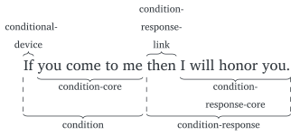
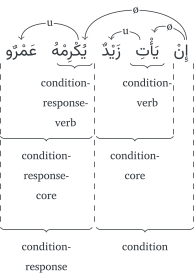
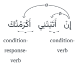
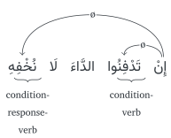
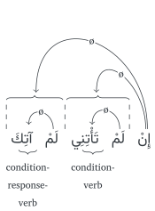
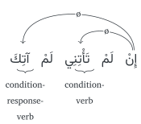
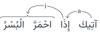
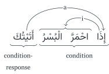

Not ready for study.
39 The conditional sentence
THIS BOOK IS A WORK IN PROGRESS. IT IS INCOMPLETE AND MAY HAVE TYPOGRAPHICAL AND OTHER ERRORS. IT IS NOT YET READY TO BE STUDIED FROM.
| Conditional sentence | الجُمْلة الشَّرْطِيّة |
| Conditional-device | أَداة الشَّرْط |
| ø-case-izing conditional-devices | أَدَوات الشَّرْط الجازِمة |
| Non-ø-case-izing conditional-devices | أَدَوات الشَّرْط غَيْر الجازِمة |
| Condition | الشَّرْط |
| Condition-core | جُمْلة الشَّرْط |
| Condition-verb | فِعْل الشَّرْط |
| Condition-response | جَواب الشَّرْط |
| Condition-response-core | جُمْلة جَواب الشَّرْط |
| Condition-response-verb | فِعْل جَواب الشَّرْط |
| Condition-response-link | [الفاء] المُقْتَرَنَة بِجَواب الشَّرْط |
| Request-response | جَواب الطَّلَب |
39.1 Introduction
Here is an example of a conditional sentence in English:
- « If you come to me, then I will honor you. »
Figure 39.1 shows its parts.

As you can see, a conditional sentence is a special sentence, which consists of two parts:
A condition (« If you come to me ») The condition itself consists of two parts:
- The conditional-device: (« if »)
- The condition-core: (« you come to me »)
A condition-response. (« then I will come to you ») The condition-response can also consist of two parts:
- The condition-response-link: (« then »). This may be null for some conditional sentences.
- The condition-response-core: (« I will honor you »)
There are many conditional-devices in Arabic. Some common ones are:
- إِنْ « if »
- إِذَا « when »
- لَوْ « if »
- مَنْ « who(ever) »
- مَا « what(ever) »
We will study them in the following sections.
39.2 The إِنْ conditional sentence
إِنْ is considered the most basic of all the conditional-devices.1
There are a few different types of conditional sentence that can be formed with إِنْ. We will discuss them below:
39.2.1 The archetypal إِنْ conditional sentence
Here is an example of an archetypal, or most basic, conditional sentence:
- إِنْ يَأْتِ زَيْدٌ يُكْرِمْهُ عَمْرٌو
« If Zayd will come, Ɛamr will honor him. »
The archetypal, إِنْ conditional sentence uses ø-case muḍāriɛ verbs in both the condition and the condition-response. This conditional sentence consists of two parts:
- a condition, (إِنْ يَأْتِ زَيْدٌ)
consisting of:- the conditional-device (إِنْ), and
- the condition-core (يَأْتِ زَيْدٌ), which is a verbal sentence containing:
- a ø-case muḍāriɛ verb known as the condition-verb (يَأْتِ)
- its doer (زَيْدٌ)
- a condition-response, (يُكْرِمْهُ عَمْرٌو) consisting of:
- the condition-response-core (يُكْرِمْهُ عَمْرٌو), which is a verbal sentence containing:
- a ø-case muḍāriɛ verb known as the condition-response-verb (يُكْرِمْ)
- its doer (عَمْرٌو)
- the condition-response-core (يُكْرِمْهُ عَمْرٌو), which is a verbal sentence containing:
The conditional particle إِنْ directly governs the condition-verb and the condition-response-verb in the ø-case.2
Figure 39.2 depicts this government for example (2) above.

Here are some more examples of the archetypal conditional sentence:
إِنْ تَأْتِنِي آتِكَ [كتاب سيبويه 3/63]
« If you will come to me, I will come to you. »إن تضرب أضرب [كتاب سيبويه 3/63]
« If you will beat, I will beat. »
39.2.2 The māḍī verb with إِنْ
A māḍī verb can be used instead of one or both of the ø-case verbs in a conditional sentence. So, for example, instead of saying:
- إِنْ تَأْتِنِي أُكْرِمْكَ
we can say, any one of:
إِنْ أَتَيْتَنِي أَكْرَمْتُكَ
إِنْ أَتَيْتَنِي أُكْرِمْكَ
إِنْ تَأْتِنِي أَكْرَمْتُكَ
As a matter of fact, in terms of frequency of usage, the māḍī verb is more common than the archetypal ø-case muḍāriɛ verb in conditional sentences.3
In general, all four options will have more-or-less the same meaning: « If you come to me, I will come to you ». In Section 39.6 below, we will discuss the tense indicated by conditional sentences in more detail. But for now we can generally consider the māḍī verb in a conditional sentence to lose its past tense.
For convenience, in this, and the following sections, we will use قَتَلَ to refer to a māḍī verb form in either the condition-verb or the condition-response-verb. Similarly, we will use يَقْتُلُ, يَقْتُلَ and يَقْتُلْ to refer to u-case, a-case, and ø-case muḍāriɛ verbs respectively.
Of the four options in examples (5) through (8), the combinations إِنْ يَقْتُلْ يَقْتُلْ and إِنْ قَتَلَ قَتَلَ are most preferred. This is because they exhibit a symmetry between the condition-verb and the condition-response-verb.4
The combination إِنْ قَتَلَ يَقْتُلْ, however, is by no means uncommon.
But combination إِنْ يَقْتُلْ قَتَلَ is the least commonly found in actual usage. This is because when the condition-verb is يَقْتُلْ it prefers the presence of another يَقْتُلْ after it as the condition-response-verb.5 Nevertheless, this combination is occasionally found, as we show in example (19) below.
With regards to the government of the conditional sentences in examples (6) through (8), The conditional-device إِنْ will continue to govern the condition-verb and the condition-response-verb in the ø-case directly, regardless of whether the verbs are يَقْتُلْ or قَتَلَ. For a قَتَلَ verb, إِنْ will govern it in the positional ø-case.6
In other words, for example (6) above, إِنْ does not govern the verbal sentences أَتَيْتَنِي and أَكْرَمْتُكَ in the positional ø-case. Rather, the māḍī verbs أَتَى and أَكْرَمَ are, both times, directly governed in the positional ø-case.7
Figure 39.3 depicts the government of example (6).

Here are some examples from attested usage of combinations of māḍī verbs and muḍāriɛ verbs in conditional sentences:
Examples of إِنْ يَقْتُلْ يَقْتُلْ:
وَإِن تَعُودُوا۟ نَعُدۡ [سورة الأنفال 8:19]
« but if you return [to war], We will return »وَإِنْ تَسْأَلِ الْجَارِيَةَ تَصْدُقْكَ [صحيح البخاري :4750]
« If you ask the slave-girl, she will tell you the truth. »إِنْ أَنْطِقْ أُطَلَّقْ وَإِنْ أَسْكُتْ أُعَلَّقْ [الشمائل المحمدية :252]
« If I speak, I will be divorced. And If I stay quiet, I will be left suspended. »إِنْ تَقْتُلْنِي تَقْتُلْ ذَا دَمٍ وَإِنْ تُنْعِمْ تُنْعِمْ عَلَى شَاكِرٍ [صحيح البخاري :4372]
« If you kill me, you kill a person wanted for a killing. But if you bestow favor, you bestow favor on a grateful person. »
Examples of إِنْ قَتَلَ قَتَلَ:
إِنۡ أَحۡسَنتُمۡ أَحۡسَنتُمۡ لِأَنفُسِكُمۡۖ [سورة الإسراء 17:7]
« If you do good, you do good for yourselves »وَإِنۡ عُدتُّمۡ عُدۡنَاۚ [سورة الإسراء 17:8]
« But if you return [to sin], We will return [to punishment]. »إِنْ أَذِنْتَ لِي أَعْطَيْتُ هَؤُلاَءِ [صحيح البخاري :2602]
« If you permit me, I will give to these [people]. »إِنْ أَحْسَنَ النَّاسُ أَحْسَنَّا وَإِنْ ظَلَمُوا ظَلَمْنَا [جامع الترمذي :2007]
« If the people are good to us, we will be good [to them]. And if they wrong [us], we will wrong [them]. »إِنْ كَرِهَ مِنْهَا خُلُقًا رَضِيَ مِنْهَا آخَرَ [صحيح مسلم :1468b]
« If he dislikes a characteristic of hers, he is pleased with another [characteristic of hers]. »
Examples of إِنْ قَتَلَ يَقْتُلْ:
- وَإِنْ أَدْرَكَنِي يَوْمُكَ أَنْصُرْكَ نَصْرًا مُؤَزَّرًا [صحيح البخاري :3392 cited by Peled, Conditional structures in Classical Arabic 16]
« If your day should overtake me, I will aid you. »
Examples of إِنْ يَقْتُلْ قَتَلَ:
- إِنْ يَعْلَمُوا أَنِّي قَدْ أَسْلَمْتُ قَالُوا فِيَّ مَا لَيْسَ فِيَّ [صحيح البخاري :3911 cited by Peled, Conditional structures in Classical Arabic 17]
« If they know that I have accepted Islām, they will say about me that which is not [true]. »
39.2.3 Negating the condition or condition-response
When either of the condition-verb or the condition-response-verb are to be negated, then we have two options:
- لَا يَقْتُلْ
- لَمْ يَقْتُلْ
Negations مَا قَتَلَ and لَنْ يَقْتُلَ are not used when negating the condition-verb or the condition-response-verb.8 (They can however be used when negating a verb which is not directly the condition-verb or the condition-response-verb, as we will see in Section 39.7.1, if Allāh wills.)
لَا يَقْتُلْ is considered the negative counterpart of يَقْتُلْ. And لَمْ يَقْتُلْ is considered the negative counterpart of قَتَلَ. And as with positive conditional sentences, a symmetry between the condition-verb and the condition-response is preferred.
So if the condition is إِنْ قَتَلَ, then لَمْ يَقْتُلْ is preferred in the condition-response.9 For example:
- إِنْ أَتَيْتَنِي لَمْ آتِكَ [composed from شرح كتاب سيبويه للسيرافي 3/295]
« If you come to me, I will not come to you. »
And if the condition is إِنْ يَقْتُلْ, then لَا يَقْتُلْ is preferred in the condition-response.10 For example:
- إِنْ تَأْتِنِي لَا آتِكَ [composed from شرح كتاب سيبويه للسيرافي 3/295]
« If you come to me, I will not come to you. »
The non-symmetric combination إِنْ لَمْ يَقْتُلْ يَقْتُلْ, (corresponding to إِنْ قَتَلَ يَقْتُلْ), is also fairly common. For example:
- إِنْ لَمْ تَأْتِنِي أَجْزِكَ [كتاب سيبويه 3/68]
« If you don’t come to me, I will recompense you. »
But as with the combination إِنْ يَقْتُلْ قَتَلَ in Section 39.2.2 above, the combination إِنْ يَقْتُلْ لَمْ يَقْتُلْ is uncommon. For example:
- إِنْ تَأْتِنِي لَمْ آتِكَ [شرح كتاب سيبويه للسيرافي 3/295]
« If you come to me, I will not come to you. »
In any case, symmetry is by no means mandatory, and the longer the distance (in words) between the condition-verb and the condition-response, the easier it is to disregard its being preferred.11
With regards to their frequencies in attested usage, option (i) لَا يَقْتُلْ is possibly the more original,12 but it is rarer in usage. Here are some examples:
إِلَّا تَفۡعَلُوهُ تَكُن فِتۡنَةࣱ فِی ٱلۡأَرۡضِ وَفَسَادࣱ كَبِیرࣱ [سورة الأنفال 8:73 cited by Reckendorf, Arabische syntax 487]
« If you do not do so [i.e., ally yourselves with other believers], there will be fitnah [i.e., disbelief and oppression] on earth and great corruption. »إِنْ تَدْفِنُوا الدَّاءَ لَا نُخْفِهِ [Reckendorf, Arabische syntax 487]
« If you bury the rancor, we will not conceal it »إِنْ لَا تَكُنْ هِنْدٌ بَكَتْهُ فَقَدْ بَكَتْ عَلَيْهِ الثُّرَيَّا [Reckendorf, Arabische syntax 487]
« If Hind did not weep [for] him, then the Pleiades have wept over him »
(The condition-response in this example begins with فَ. We will discuss this in Section 39.7 below.)اللهُمّ إنْ تَظْهَرْ عَلَيّ هَذِهِ الْعِصَابَةُ يَظْهَرْ الشّرْكُ، وَلَا يَقُمْ لَك دِين [مغازي الواقدي 1/67 cited by Peled, Conditional structures in Classical Arabic 15]
« O Allāh if this band should gain ascendancy over me, polytheism would gain ascendancy, and a religion would not be established for you. »وَإِنْ لَا تَفْعَلْ مَلَأْتُ يَدَكَ شُغْلًا وَلَمْ أَسُدَّ فَقْرَكَ [صحيح ابن حبان :393]
« And if you don’t do [so], I will fill your hand with preoccupation, and I will not block your poverty. »
The particle لَا will not affect the government of the condition-verb or the condition-response-verb. The conditional particle إِنْ will continue to govern these verbs directly in the ø-case. Figure 39.4 depicts the government of the negated condition-response-verb in example (25) above.

Compared to option (i) لَا يَقْتُلْ, option (ii) لَمْ يَقْتُلْ is by far the more common technique to negate the condition-verb and the condition-response-verb.
Just like the case for قَتَلَ, when لَمْ is used to negate the condition-verb or the condition-response-verb, it also generally loses its past tense.
Here are some examples of the condition-verb and the condition-response-verb, negated with لَمْ:
إِنْ أَتَيْتَنِي لَمْ آتِكَ [كتاب سيبويه 3/91]
« If you come to me, I will not come to you. »إِنْ لَمْ تَأْتِنِي أَجْزِكَ [كتاب سيبويه 3/68]
« If you don’t come to me, I will recompense you. »إِنْ لَمْ ُتُكْرِمْنِي لَمْ أُكْرِمْكَ [شرح ألفية ابن مالك للشاطبي 6/133]
« If you don’t honor me, I will not honor you. »إِنِ افْتَرَقْتُمْ لَمْ تَجْتَمِعُوا أَبَدًا [تاريخ الطبري 4/24 cited by Reckendorf, Arabische syntax 485]
« If you factionate, you will not be united ever. »وَإِنْ لَمْ يَعْمَلْهَا كُتِبَتْ حَسَنَةً [مسند أحمد :2001]
« And if he did not do it, a good deed is written for him. »فَإِنْ وَجَدْتُ بُكَاءً بَكَيْتُ وَإِنْ لَمْ أَجِدْ بُكَاءً تَبَاكَيْتُ لِبُكَائِكُمَا [صحيح مسلم :1763]
« For if I feel like crying I will cry, and if I don’t feel like crying, I will compel myself to cry [in sympathy] to your crying. »
The grammarians differed regarding the government of the the condition-verb and the condition-response-verb, when negated with لَمْ.13 Some grammarians are of the opinion that لَمْ directly governs the ø-case mudarie verb while إِنْ governs the verbal sentences which contain the muḍāriɛ verb. This government is depicted in Figure 39.5 for example (29).

Other grammarians were of the opinion that إِنْ would continue to govern the condition-verb and the condition-response-verb directly, and that لَمْ has no governing effect in this case. This is depicted in Figure 39.6 for the same example (29).

39.2.4 The inverted conditional sentence
Oftentimes, we come across an inverted conditional sentence, where what seems to be the condition-response comes before the condition. For example:
- آتِيكَ إِنْ أَتَيْتَنِى [شرح ابن يعيش على المفصل 5/118]
« I will come to you if you come to me. »
In example (35) above, it would seem that آتِيكَ is the condition-response and إِنْ أَتَيْتَنِى is the condition.
But actually, the mainstream view amongst the grammarians is that آتِيكَ cannot be a condition-response because the condition-response is not allowed to precede the condition.
This view is supported by the fact that the verb in آتِيكَ is in the u-case. If it were a condition-response-verb then it would be in the ø-case, thus: آتِكَ. But a ø-case muḍāriɛ verb in the beginning of sentence, followed by a condition is not a correctly formed sentence. So we cannot say, for example:
- ✗ آتِكَ إِنْ أَتَيْتَنِى [شرح ابن يعيش على المفصل 5/118]
The way the grammarians solve the analysis of example (35) is by considering آتِيكَ an independent sentence that is structurally complete. إِنْ أَتَيْتَنِى is then considered to be a condition. Its condition-response [آتِكَ] is taqdīred after it. The taqdīred condition-response is deleted in surface speech and its meaning is indicated by the preceding independent sentence آتِيكَ.
The complete sentence with the taqdīr is:
- آتِيكَ إِنْ أَتَيْتَنِى [آتِكَ]
But how is the conditional sentence إِنْ أَتَيْتَنِى [آتِكَ] connected to the preceding independent sentence آتِيكَ? One opinion is that the conditional sentence إِنْ أَتَيْتَنِى [آتِكَ] can be considered to be attached to (i.e. governed by) the verb in آتِيكَ in much the same way as an adverb of time/place or preposition would be.14 For example, in:
- آتيك يومَ الجمعة [شرح ابن يعيش على المفصل 5/118]
« I will come to you the day of Friday. »
Having said all the above, there is no problem if we refer to such a sentence, loosely speaking and for convenience, as an inverted conditional sentence. As long as we understand that the true condition-response is deleted and taqdīred after the condition in sentence word order.
Here are some more examples of inverted conditional sentences:
أًحْسِنُ إليك إن أكرمتَنى [شرح ابن يعيش على المفصل 5/118]
« I will be good to you if you honor me. »أنتِ طالقٌ إن دخلتِ الدارَ [شرح ابن يعيش على المفصل 5/118]
« Youf are divorced if you enter the house. »أنا ظالمٌ إن فعلتُ [شرح ابن يعيش على المفصل 5/118]
« I [will be] a wrongdoer if I did [some action]. »لاَ يَقُلْ أَحَدُكُمُ اللَّهُمَّ اغْفِرْ لِي إِنْ شِئْتَ ارْحَمْنِي إِنْ شِئْتَ ارْزُقْنِي إِنْ شِئْتَ وَلْيَعْزِمْ مَسْأَلَتَهُ إِنَّهُ يَفْعَلُ مَا يَشَاءُ لاَ مُكْرِهَ لَهُ [صحيح البخاري :7477]
« Let not any of you say, “O Allāh, forgive me if You wish, have mercy on me if You wish, provide sustenance me if You wish.” [Rather,] let him be resolved in his asking. Indeed He does what He wills, there is no one to compel Him. »
In examples (40) and (41) above, the “inverted” condition-responses are the nounal sentences (أَنْتِ طَالِقٌ and أَنَا ظَالِمٌ), not verbal sentences. We will discuss such condition-responses in Section 39.7.1, if Allāh wills.
Note that all the examples of inverted conditional sentences, that we have given so far have إِنْ قَتَلَ in the condition and not إِنْ يَقْتُلْ. This is because, as we mentioned in Section 39.2.2 above, when the condition-verb is يَقْتُلْ it prefers the presence of another يَقْتُلْ after it as the condition-response-verb. So the following example is not preferred:
- آتِيكَ إِنْ تَأْتِنِي [كتاب سيبويه 3/68; شرح ابن يعيش على المفصل 5/118]
« I will come to you, if you come to me. »
This is because يَقْتُلْ in the condition (إِنْ تَأْتِنِي) prefers that it have another يَقْتُلْ in the condition-response, and that its condition-response not be deleted.15
Having said that, an inverted إِنْ يَقْتُلْ condition could very rarely be found.16
إِنْ لَمْ يَقْتُلْ in an inverted conditional sentence is, however, fine. This is because it is the negative counterpart to إِنْ قَتَلَ. For example,
- وَاعْلَمِي أَنِّي امْرُؤٌ سَأَمُوتُ إنْ لَمْ أُقْتَلِ [عنترة cited by Reckendorf, Arabische syntax 488]
« Know that I am a person– I will die if I am not killed. »
39.2.5 A u-case muḍāriɛ condition-response-verb
Occassionally we see a conditional sentence of the form إِنْ قَتَلَ يَقْتُلُ. That is, a muḍāriɛ condition-response-verb is in the u-case, not the ø-case. For example:
- إِنْ أَتَيْتَنِي آتِيكَ [كتاب سيبويه 3/66]
« If you come to me, I come to you. »
This structure again requires taqdīr to analyze it. This is because the underlying principle that the grammarians have theorized for the conditional sentence, is that the conditional-device إِنْ governs both the condition-verb and the condition-response-verb in the ø-case.
One way the grammarians work around this problem is by taqdīring example (45) to essentially be an inverted conditional sentence, thus:
- آتِيكَ إِنْ أَتَيْتَنِي [آتِكَ]
« I come to you if you come to me [I come to you]. »
Once the original condition-response آتِكَ is deleted, then the independent sentence آتِيكَ is (optionally) moved to after the condition to take the place of the original condition-response آتِكَ.17
There is also another technique to analyze such conditional sentences, and that is to assume a deleted فَ (and also possibly a deleted subject) before the condition-response.18 With the deleted elements restored, restored, the sentence is:
- إِنْ أَتَيْتَنِي فَآتِيكَ
or
إِنْ أَتَيْتَنِي فَأَنا آتِيكَ [composed from شرح كتاب سيبويه للرماني - جزء منه 949]
« If you come to me then I will come to you. »
Condition-responses that begin with فَ will be treated in Section 39.7 below, if Allāh wills.
Here are some more examples of this kind of conditional sentence:
- وإن أتاه خليلٌ يومَ مسألةٍ يقولُ لا غائبٌ مالي ولا حَرِمُ [كتاب سيبويه 3/66]
« And if a friend came to him on a day of asking, he says, “My wealth is neither absent nor denied.” »
Note again, that the condition-verb in these examples has been قَتَلَ, not يَقْتُلْ. This is again consistent with what we mentioned in Section 39.2.2, that when the condition-verb is يَقْتُلْ then it prefers the presence of another يَقْتُلْ as the condition-response-verb.
Having said that, a conditional sentence of the form إِنْ يَقْتُلْ يَقْتُلُ is found on occasion, often by poetic license.19 For example:
يا أَقْرَعُ بنَ حابسٍ يا أَقْرَعُ ~ إنَّك إن يُصْرَعْ أخوك تُصْرَعُ [كتاب سيبويه 3/67]
« O Aqraɛ son of Ḥābis, O Aqraɛ! Indeed if your brother would be thrown down, you are being thrown down. »
An alternate analysis is that the condition is parenthetical and تُصْرَعُ is the info of إِنَّكَ.20قَالَتِ اللَّهُمَّ إِنْ يَمُتْ يُقَالُ هِيَ قَتَلَتْهُ [صحيح البخاري :2217 cited by Peled, Conditional structures in Classical Arabic 17]
« She said, “O Allāh if he should die, it will be said, ‘She killed him.’” »
39.2.6 إِمَّا
مَا may optionaly be suffixed to إِنْ. The ن is assimilated with the م, and it is then written and pronounced as إِمَّا. By the way, this إِمَّا is distinct from the إِمَّا that is used to signify « either … or ».21 The addition of مَا to إِنْ can emphasize the meaning of the condition-response. Example:
- إمّا تَأْتِنِي آتِكَ [شرح ابن يعيش على المفصل 5/115]
« If you come to me, I will come to you. »
يَقْتُلْ, as a condition-verb, is only used with إِمَّا uncommonly or by poetic license.22 Instead, the condition-verb with إِمَّا is usually a emphatic verb (يَقْتُلَنَّ). For example:
- فَإِمَّا تَرَیِنَّ مِنَ ٱلۡبَشَرِ أَحَدࣰا فَقُولِیۤ إِنِّی نَذَرۡتُ لِلرَّحۡمَـٰنِ صَوۡمࣰا فَلَنۡ أُكَلِّمَ ٱلۡیَوۡمَ إِنسِیࣰّا [سورة مريم 19:26 cited by شرح ابن يعيش على المفصل 5/115]
« And if you see from among humanity anyone, say, ‘Indeed, I have vowed to the Most Merciful abstention, so I will not speak today to [any] man.’” »
(فَ introducing the condition-response is discussed in Section 39.7 below.)
39.3 The إِذَا conditional sentence
39.3.1 The original temporal signification of إِذَا
إِذَا « when » is a noun which originally has a temporal (time) signification rather than a conditional signification.23 For example,
- آتِيكَ إِذَا احْمَرَّ الْبُسْرُ [كتاب سيبويه 3/60]
« I will come to you when the unripe dates redden. »
In example (53) above, the u-case muḍāriɛ verb آتِي signifies its usual imperfect aspect « I come/will come ». This is because example (53) is technically not a conditional sentence. إِذَا signifies « when », not as a condition which may or may not occur, but as an event which is expected to occur.
إِذَا is in the a-case as a adverb of place. It is governed by the verb آتِي. إِذَا is also a annexed noun. Its (positional) annexed-to noun is the following verbal sentence احْمَرَّ الْبُسْرُ. The government of example (53) above is depicted in Figure 39.7.

A قَتَلَ verbal sentence typically does not hold on to its past tense when it is the positional annexed-to noun of إِذَا. That is why we have translated احْمَرَّ in example (53) as « redden », not « reddened ».
39.3.2 Conditional signification of إِذَا
Example (53) above can be transformed into a conditional sentence. This is done by taking إِذَا and its positional annexed-to noun احْمَرَّ الْبُسْرُ, and putting them in the front of the sentence, thus:
- إِذَا احْمَرَّ الْبُسْرُ أَتَيْتُكَ
« When the unripe dates redden, I will come to you. »
Note that we have also replaced the يَقْتُلُ verbal sentence آتِيكَ in example (53) with the قَتَلَ verbal sentence أَتَيْتُ. This is because now that example (54) is a conditional sentence (with the condition-response following the condition), قَتَلَ as the condition-response-verb also does not hold on to its past tense meaning.
Also unlike إِنْ, even when إِذَا is a conditional-device, it does not (directly) govern either of the verbs in the condition or the condition-response. Rather, إِذَا governs entire verbal sentence in the condition in an annexation. And إِذَا itself is governed by the verb in the condition-response.24 Figure 39.8 depicts the government of example (54).

Here are some more examples of conditional sentences with إِذَا:
إِذَا صَلَحَتْ صَلَحَ الْجَسَدُ كُلُّهُ وَإِذَا فَسَدَتْ فَسَدَ الْجَسَدُ كُلُّهُ [صحيح البخاري :52]
« When it is upright, the whole body is upright. And when it is corrupt, the whole body is corrupt. »كَانَ رَسُولُ اللهِ صلى الله عليه وسلم إِذَا سَجَدَ جَافَى حَتَّى يُرَى بَيَاضُ إِبْطَيْهِ [مسند أحمد :14138]
« When the Messenger of Allāh would prostrate, he would put his upper arms apart from his sides until the whiteness of his underarms could be seen. »كَانَ إِذَا خَرَجَ أَقْرَعَ بَيْنَ نِسَائِهِ [صحيح البخاري :5211]
« When he would go out (on a journey), he would draw lots among his wives. »إِذَا دَخَلَ أَهْلُ الْجَنَّةِ الْجَنَّةَ، نُودُوا … [مسند أحمد :18935]
« When the people of Paradise enter Paradise, it will be called out to them … »
39.3.3 Muḍāriɛ verbs in the إِذَا conditional sentence
We learned in Section 39.2.1 above, that the conditional-device إِنْ governs the condition-verb and the condition-response-verb in the ø-case.
The conditional-device إِذَا, however, does not govern either the condition-verb or condition-response-verb, as we saw in Figure 39.8 above. So يَقْتُلْ is not usually used in إِذَا conditional sentences. The most common form for إِذَا conditional sentences, as we saw in example (54) above, is إِذَا قَتَلَ قَتَلَ.
Having said that, we do often find the u-case muḍāriɛ verb يَقْتُلُ as either or as both the condition-verb and the condition-response-verb.25 Here are some examples:
إِذَا تُتۡلَىٰ عَلَیۡهِمۡ ءَایَـٰتُ ٱلرَّحۡمَـٰنِ خَرُّوا۟ سُجَّدࣰا وَبُكِیࣰّا [سورة مريم 19:58 cited by Reckendorf, Die syntaktischen Verhältnisse des Arabischen 648]
« When the verses of the Most Merciful were recited to them, they fell in prostration and weeping. »إِذَا تَكُونُ كَرِيهَةٌ أُدْعَى لَهَا [cited by Reckendorf, Die syntaktischen Verhältnisse des Arabischen 647]
« When there is an inconvenience, I am called to it. »إِنّ الكريم إذا يُحَرَّبُ يَغضَبُ [cited by Reckendorf, Die syntaktischen Verhältnisse des Arabischen 647]
« The noble person – when he is provoked, he becomes angry. »وإذا تَضْحَكُ تُبْدي حَبباً [cited by Reckendorf, Die syntaktischen Verhältnisse des Arabischen 647–648]
« When she laughs, she shows musky bubbles. »
Very rarely, we also find يَقْتُلْ used in إِذَا conditional sentences. For example:
إِذَا أَخَذْتُمَا مَضَاجِعَكُمَا تُكَبِّرَا أَرْبَعًا وَثَلاَثِينَ وَتُسَبِّحَا ثَلاَثًا وَثَلاَثِينَ وَتَحْمَدَا ثَلاَثَةً وَثَلاَثِينَ فَهْوَ خَيْرٌ لَكُمَا مِنْ خَادِمٍ
[صحيح البخاري :3705 cited by شواهد التوضيح لابن مالك 71]
« When you go to bed, you magnify thirty-four times, and glorify thirty-three times, and praise thirty-three times. »إِذَا تُصِبْكَ خَصَاصَةٌ فَتَجَمَّلِ [شرح الفارضي على ألفية ابن مالك 4/18; Wright 2/12B]
« When poverty befalls you then bear it patiently. »
(تَجَمَّلِ in rhyme for تَجَمَّلْ.)
39.3.4 Negation in the إِذَا conditional sentence
When the negating the condition-verb or the condition-response-verb in إِذَا conditional sentences, the form لَمْ يَقْتُلْ is used.
The form لَا يَقْتُلُ can also be used to negate the condition-response-verb.
Here are some examples:
إِنَّ مِمَّا أَدْرَكَ النَّاسُ مِنْ كَلاَمِ النُّبُوَّةِ الأُولَى إِذَا لَمْ تَسْتَحِي فَاصْنَعْ مَا شِئْتَ [صحيح البخاري :6120]
« One of the sayings of the early prophets which the people have got is: If you don’t feel ashamed, then do whatever you like. »إِذَا لَمْ يَجِدِ الْمَاءَ لاَ يُصَلِّي [صحيح البخاري :345 cited by Peled, Conditional structures in Classical Arabic 28]
« If he doesn’t find water, he doesn’t pray? »أَلَيْسَ إِذَا حَاضَتْ لَمْ تُصَلِّ وَلَمْ تَصُمْ [صحيح البخاري :304]
« Is it not the case [that] when she mensurates, she does not pray, and she does not fast? »
39.3.5 The inverted conditional sentence with إِذَا
Let’s go back to example (53) above:
- آتِيكَ إِذَا احْمَرَّ الْبُسْرُ [كتاب سيبويه 3/60]
« I will come to you when the unripe dates redden. »
Technically, this is not a conditional sentence. Nor does it technically contain a conditional sentence. This is because a conditional sentence, according to our definition, requires that the condition-response follow the condition in sentence word order. But there is no condition-response, whether surface or taqdīred, after إِذَا احْمَرَّ الْبُسْرُ. (See the government of this sentence in Figure 39.7.)
Having said that, there is no problem if we refer to such a sentence, loosely speaking and for convenience, as an inverted conditional sentence. if contains the meaning of a condition. Here are some more examples:
وَتَوَفَّنِي إِذَا كَانَتِ الْوَفَاةُ خَيْرًا لِي [صحيح البخاري :5671]
« And take my soul if death is better for me. »فَأَقْبَلَ رَجُلٌ غَائِرُ الْعَيْنَيْنِ مُشْرِفُ الْوَجْنَتَيْنِ نَاتِئُ الْجَبِينِ كَثُّ اللِّحْيَةِ مَحْلُوقٌ فَقَالَ اتَّقِ اللَّهَ يَا مُحَمَّدُ فَقَالَ مَنْ يُطِعِ اللَّهَ إِذَا عَصَيْتُ أَيَأْمَنُنِي اللَّهُ عَلَى أَهْلِ الأَرْضِ فَلاَ تَأْمَنُونِي26
[صحيح البخاري :3344 cited by Peled, Conditional structures in Classical Arabic 142]
« Then a man with sunken eyes, prominent checks, a raised forehead, a thick beard and a shaven head, came in front [of the Prophet ﷺ] and said, “Be afraid of Allāh, O Muḥammad!” The Prophet ﷺ said, “Who would obey Allah if I disobeyed [Him]? (Is it fair that) Allāh has trusted all the people of the earth to me while you do not trust me?” »لِلْمُسْلِمِ عَلَى الْمُسْلِمِ سِتٌّ بِالْمَعْرُوفِ يُسَلِّمُ عَلَيْهِ إِذَا لَقِيَهُ وَيُجِيبُهُ إِذَا دَعَاهُ وَيُشَمِّتُهُ إِذَا عَطَسَ وَيَعُودُهُ إِذَا مَرِضَ وَيَتْبَعُ جَنَازَتَهُ إِذَا مَاتَ وَيُحِبُّ لَهُ مَا يُحِبُّ لِنَفْسِهِ [جامع الترمذي :2736]
« There are six courtesies due to a Muslim from another Muslim: he gives the greeting of peace when he sees him, he responds to him when he invites him, he [says يرحمك الله] when he sneezes, he visits him when he is ill, he follows his funeral when he dies, and he loves for him what he loves for himself. »
39.3.6 Certainty of the event indicated by إِذَا
إِذَا is typically used when the condition is certain to occur. The English expression, « It’s not a matter of “if” but “when” », also indicates the fundamental difference between « if » and « when » conditional sentences. So, for example, if you say:
- إن تكرمني أكرمك [الإيضاح في علوم البلاغة للقزويني 2/117]
« If you will honor me, I will honor you. »
then you are not certain if the other person would honor you or not. But if you say:
- إذا زالت الشمس آتيك [الإيضاح في علوم البلاغة للقزويني 2/117]
« When the sun declines, I will come to you. »
then you are certain that the condition إذا زالت الشمس will, at some point, be valid.27
Having said that, إِذَا may not always indicate the certainness of the event in the condition. For example:
- فَأَقْبَلَ رَجُلٌ غَائِرُ الْعَيْنَيْنِ مُشْرِفُ الْوَجْنَتَيْنِ نَاتِئُ الْجَبِينِ كَثُّ اللِّحْيَةِ مَحْلُوقٌ فَقَالَ اتَّقِ اللَّهَ يَا مُحَمَّدُ فَقَالَ مَنْ يُطِعِ اللَّهَ إِذَا عَصَيْتُ أَيَأْمَنُنِي اللَّهُ عَلَى أَهْلِ الأَرْضِ فَلاَ تَأْمَنُونِي
[صحيح البخاري :3344]
« Then a man with sunken eyes, prominent checks, a raised forehead, a thick beard and a shaven head, came in front [of the Prophet ﷺ] and said, “Be afraid of Allāh, O Muḥammad!” The Prophet ﷺ said, “Who would obey Allah if I disobeyed [Him]? (Is it fair that) Allāh has trusted all the people of the earth to me while you do not trust me?” »
Even though إِذَا is used in the above ḥadīt͡h, it does not indicate a certain event. Far from it. In fact, there is no question that the Prophet ﷺ would never disobey Allāh.
In such cases, إِذَا can retain its temporal signification, but the event in the condition would not be considered certain.
39.3.7 إِذَا مَا
مَا may optionaly be suffixed to إِذَا. This مَا is redundant and it can (but does not necessarily have to) imply a vagueness in meaning.28 For example:
- آتيك إذا ما طلعت الشمس
[composed from معاني النحو 4/95 citing الكليات للكفوي]
« I will come to you, [one of the days] when the sun will rise. »
Or it can imply an extra emphasis. For example:
- حَتَّىٰۤ إِذَا مَا جَاۤءُوهَا شَهِدَ عَلَیۡهِمۡ سَمۡعُهُمۡ وَأَبۡصَـٰرُهُمۡ وَجُلُودُهُم بِمَا كَانُوا۟ یَعۡمَلُونَ [سورة فصلت 41:20 cited by معاني النحو 4/96ff]
« Until, when they reach it, their hearing and their eyes and their skins will testify against them of what they used to do. »
إِذَا مَا is more common than إِذَا when the condition-verb and/or the condition-response-verb are يَقْتُلْ instead of قَتَلَ (see examples (63) and (64) above).29 Examples:
إذا ما تأتني أُحسِنْ إليك [شرح ابن يعيش على المفصل 4/272]
« Whenever you come to me, I will do good to you. »وَكَانَ إِذَا مَا يَسْلُلِ السَّيْفَ يَضْرِبِ [شرح الفارضي على ألفية ابن مالك 4/19]
« And he would, when he drew his sword, strike. »
39.3.8 كَانَ before the إِذَا conditional sentence
TODO:
Fischer 236
كان إذا اشتكيت رحمني
كنت إذل قوم غزوني غزوتهم
كانت العجوز إذا كلمها تسكت عنه
39.4 Other conditional-devices
In addition to إِنْ and إِذَا, there are other conditional-devices as well. The main other conditional-device is لَوْ but we will treate it separately in Section 39.9 below. Besides لَوْ, the additional conditional-devices can be split into two categories:
- ø-case-izing conditional-devices like إِنْ: these govern a condition-verb and a condition-response-verb in the ø-case.
- Non-ø-case-izing conditional-devices: these don’t govern the condition-verb and the condition-response-verb in the ø-case.
We will discuss both categories below:
39.4.1 ø-case-izing conditional-devices
Most of the nouns that constitute the question-devices (like مَنْ « who », مَا « what », أَيْنَ « where », etc.) double as ø-case-izing conditional-devices.30
In addition to the question-devices, some other adverbs of time/place also double as ø-case-izing conditional-devices, like حَيْثُ « where », and إِذْ « when ».
Suffixing مَا
When the above nouns are re-used as conditional-devices, an extra مَا is often suffixed to many of them, signifying and emphasizing an « -ever » meaning. For example: أَيْنَمَا « wherever ». The suffixing of مَا to these conditional-devices falls under three categories31:
Those for whom suffixing a مَا is obligatory:
- إِذْمَا « if ». (By the way, according to some grammarians, once مَا is suffixed to إِذْ to make it an conditional-device, it ceases to be a noun and becomes a particle.32)
- حَيْثُمَا « wherever »
Those for whom suffixing a مَا is optional. These are the majority of the question-devices that are reused as conditional-devices. For example:
- مَا/مَهْمَا « what(ever) ». (One theory is that the origin of مَهْمَا is مَامَا.33)
- أَيْنَ/أَيْنَمَا « where(ever) »
- مَتَى/مَتَى مَا « when(ever) »
- أَيَّانَ/أَيَّانَ مَا « when(ever) »
- أَيّ/أَيُّمَا « which(ever) »
- كَيْفَ/كَيْفَمَا « however ». (كَيْفَ/كَيْفَمَا as conditional-devices are disputed; some grammarians did not allow them.34
Note that when مَا is suffixed, it is joined, in writing, to some of the question-devices and not to others.
Those that are not suffixed with a مَا, according to the standard view. But some grammarians did allow them to be suffixed with مَا.35:
- مَنْ « who(ever) »
- أَنَّى « whence » (can mean « from where », « how », « when »36)
Conditional sentences with the ø-case-izing the conditional-devices
Like إِنْ, these conditional-devices will govern a condition-verb and a condition-response-verb in the ø-case. Also, like إِنْ, māḍī verbs can be used instead of the ø-case muḍāriɛ verbs.
The analysis of these conditional-devices governing the condition-verb and condition-response-verb in the ø-case, while themselves oftentimes being governees, becomes complex, and has been the subject of much discussion by the grammarians.37 Here, we treat the subject summarily:
The conditional-devices مَنْ, مَا, and مَهْمَا, are, by default, in the u-case as the subject of the sentence. Examples:
- مَنْ يُكْرِمْنِي أُكْرِمْهُ [شرح الفارضي على ألفية ابن مالك 4/15]
« Whoever honors me, I will honor him. »
مَن یَعۡمَلۡ سُوۤءࣰا یُجۡزَ بِهِۦ [سورة النساء 4:123 cited by شرح ابن عقيل على الألفية 4/27]
« Whoever does a wrong will be recompensed for it »مَنِ اتَّبَعَ عَوْرَاتِهِمْ يَتَّبِعِ اللَّهُ عَوْرَتَهُ [سنن أبي داود :4880]
« Whoever trails [them for] their faults, Allāh will trail [him for] his fault. »مَنْ يَقُمْ لَيْلَةَ الْقَدْرِ إِيمَانًا وَاحْتِسَابًا غُفِرَ لَهُ مَا تَقَدَّمَ مِنْ ذَنْبِهِ [صحيح البخاري :35]
« Whoever stands [in prayer] on the Night of Decree, in faith, and hoping for reward, then his previous sins will be forgiven. »
(This is a rare example of مَنْ يَقْتُلْ قَتَلَ.)مَا يُعْجِبْكَ يُعْجِبْنِي [شرح الفارضي على ألفية ابن مالك 4/15]
« Whatever pleases you, it will please me. »وَمَا تَفۡعَلُوا۟ مِنۡ خَیۡرࣲ یَعۡلَمۡهُ ٱللَّهُۗ [سورة البقرة 2:197 cited by شرح ابن عقيل على الألفية 4/27]
« And whatever good you do - Allāh knows it. »مَهْمَا حَصَلَ كَفَى [شرح الفارضي على ألفية ابن مالك 4/15]
« Whatever is achieved, it is sufficient. »أَغَرَّكِ مِنِّي أَنَّ حُبَّكِ قَاتِلِى وَأَنَّكِ مَهْمَا تَأْمُرِي الْقَلْبَ يَفْعَلْ [شرح ابن يعيش على المفصل 4/267]
« That your love is killing me has emboldened you against me. And that you: whatever you order the heart, it will do [it]. »
If they refer to the direct doee of the condition-verb, then they are analyzed in the a-case as a direct doee.
مَنْ تَضْرِبْ أَضْرِبْ [شرح الفارضي على ألفية ابن مالك 4/15]
« Whomever you beat, I will beat. »مَا تَفْعَلْ أَفْعَلْ [شرح الفارضي على ألفية ابن مالك 4/15]
« Whatever you do, I will do. »مَهْمَا تَفْعَلْ أَفْعَلْ [شرح الفارضي على ألفية ابن مالك 4/15]
« Whatever you do, I will do. »آتِي مَنْ أَتَانِي [كتاب سيبويه 3/70]
« I will come to who will come to me. »
(This is an inverted conditional sentence with a deleted condition-response. See Section 39.2.4 above and also example (123) below.)
In such cases, the condition-core and/or the condition-response-core may include a pronoun that refers back to the conditional-device. Examples:
من تضرب أضربه [همع الهوامع للسيوطي 2/566]
« Whomever you beat, I will beat him. »من يضْربهُ زيد أضربه [همع الهوامع للسيوطي 2/566]
« Whoever Zayd beats [him], I will beat him. »من تضربه أضربه [همع الهوامع للسيوطي 2/566]
« Whomever you beat [him], I will beat him. »
If the conditional-device is preceded by a preposition, or a annexed noun, it they will be in the i-case. Example:
بِمَنْ تَمْرُرْ أَمْرُرْ بِهِ [كتاب سيبويه 3/82]
« By whom you pass, I will pass. »غُلَامَ مَنْ تَضْرِبْ أَضْرِبْ [شرح الفارضي على ألفية ابن مالك 2/451]
« Whoever’s slave-boy you beat, I will beat. »
The conditional-devices أَيْنَ/أَيْنَمَا, حَيْثُمَا, مَتَى, أَيَّانَ, and أَنَّى are analyzed in the a-case as adverbs of time/place. For example:
مَتَى تَخْرُجْ أَخْرُجْ [شرح الفارضي على ألفية ابن مالك 4/16]
« When you will exit, I will exit. »مَتَى أَضَعِ الْعِمَامَة تَعْرِفُونِي [شرح قطر الندى وبل الصدى 86]
« When I take off the turban, you will recognize me. »
مَتَى مَا تَلْقَنِي فَرْدَيْنِ تَرْجُفْ [شرح الفارضي على ألفية ابن مالك 4/17]
« Whenever you meet me individually, you shall quake. »أَيَّانَ تَذْهَبْ أَذْهَبْ [شرح الفارضي على ألفية ابن مالك 4/16]
« When you will go, I will go. »فَأَيَّانَ مَا تَعْدِلْ بِهَا الرِّيحُ تَنْزِلِ [شرح الفارضي على ألفية ابن مالك 88]
« So whenever the wind inclines it, it comes down. »أَيْنَ تَجْلِسْ أَجْلِسْ [شرح الفارضي على ألفية ابن مالك 4/16]
« Where you will sit, I will sit. »أَیۡنَمَا تَكُونُوا۟ یُدۡرِككُّمُ ٱلۡمَوۡتُ [سورة النساء 4:78]
« Wherever you may be, death will overtake you »أَنَّى تَذْهَبْ تُصِبْ خَيْرًا [شرح الفارضي على ألفية ابن مالك 4/16]
« Wherever you will go, you will strike goodness. »حَيْثُمَا تَسْتَقِمْ تُفْلِحْ [شرح الفارضي على ألفية ابن مالك 4/16]
« Wherever you stand firm, you will succeed. »
The conditional-device كَيْفَمَا is anaylzed as a ḥāl. For example:
- كَيْفَمَا تَكُنْ أَكُنْ [شرح ألفية ابن مالك للشاطبي 6/108]
« However you will be, I will be. »
The conditional-device أَيّ
The conditional-device أَيّ behaves like the others above. Except, it displays its case. Examples:
As a subject:
أيٌّ يُكْرِمْنِي أُكْرِمْهُ [شرح الفارضي على ألفية ابن مالك 4/16]
« Whichever [man] honors me, I will honor him. »أيَّةٌ تُكْرِمْنِي أُكْرِمْهُا [شرح الفارضي على ألفية ابن مالك 4/16]
« Whichever [woman] honors me, I will honor her. »
As a direct doee:
أيَّهم تَضْرِبْ أَضْرِبْ [شرح الفارضي على ألفية ابن مالك 4/16]
« Whichever of them you beat, I will beat. »أيًّا تَضْرِبْ أَضْرِبْ [شرح الفارضي على ألفية ابن مالك 4/16]
« Whichever you beat, I will beat. »أَیࣰّا مَّا تَدۡعُوا۟ فَلَهُ ٱلۡأَسۡمَاۤءُ ٱلۡحُسۡنَىٰۚ [سورة الإسراء 17:110 cited by شرح الفارضي على ألفية ابن مالك 4/16]
« Whichever [name] you call - to Him belong the best names. »
(فَ introducing the condition-response is discussed in Section 39.7 below.)
مَا can be added between أَيّ and its annexed-to noun. For example:
- أَیَّمَا ٱلۡأَجَلَیۡنِ قَضَیۡتُ فَلَا عُدۡوَ ٰنَ عَلَیَّۖ [سورة الإسراء 17:110 cited by شرح الفارضي على ألفية ابن مالك 4/16]
« Whichever of the two terms I complete - there is no injustice to me »
As a adverb of time/place:
أَيَّ وَقْتٍ تَقُمْ أَقُمْ [شرح الفارضي على ألفية ابن مالك 4/16]
« Whichever time you stand, I will stand. »أَيَّ مَكَانٍ تَجْلِسْ أَجْلِسْ [شرح الفارضي على ألفية ابن مالك 4/16]
« Whichever time you stand, I will stand. »
The conditional-device إِذْمَا
إِذْمَا, according to the standard view, is a particle like إِنْ. And like إِنْ it will then mean « if », not « when ».38
- إِذْمَا تَقُمْ أَقُمْ [شرح التصريح على التوضيح 2/398]
« If you stand, I will stand. »
39.4.2 Non-ø-case-izing conditional-devices
The main non-ø-case-izing conditional-devices are إِذَا (which we treated in Section 39.3 above), and لَوْ (which we treat in Section 39.9 below.)
For some background regarding non-ø-case-izing conditional-devices, for the earlier grammarians, conditionality was strongly associated with the syntax of a ø-case condition-verb. So much so that even إِذَا and لَوْ may not have been treated under the heading of conditional sentences. As grammar developed, semantic considerations allowed them to be discussed with إِنْ as conditional-devices.39
Even so, unlike ø-case-izing conditional-devices, non-ø-case-izing conditional-devices, are loosely defined set, with some ø-case-izing conditional-devices imparting only a whiff of, or only partial conditionality.
There are some indicators, such that if one or more are present, they can allow a sentence to have a conditional meaning, in varying degrees. These are:
- There are two clauses where the execution of the event in one (condition-response) clause is dependent on the fulfilment of the execution of an event in the other (condition) clause.
- The condition clause occurs before the condition-response clause in sentence word order.
- The condition clause has a verb which can be considered (loosely) the condition-verb. Same goes for the condition-response clause.
- The tense of the condition-verb and/or condition-response-verb (if māḍī) is shifted to the future.
We discuss some of these non-ø-case-izing conditional-devices below:
Question-devices and adverbs of time/place
The same question-devices the adverbs of time/place which we discussed as ø-case-izing conditional-devices can also impart a conditional meaning when used with their original functions as connected nouns and adverbs of time/place.
As discussed above, when used as such, they may technically not be considered “conditional sentences” because of the lack of an (either overt or positional) ø-case condition-verb.
We list some examples below. Note that the verbs in the condition and condition-response are not in the ø-case. Technically, they won’t be called the “condition-verb” and “condition-response-verb”. Furthermore, the structure of the “condition-core” and “condition-response-core” could technically not have to be a verbal sentence.
مَا تَقُولُ أَقُولُ [كتاب سيبويه 3/69]
« What you say, I will say. »أَقُولُ مَا تَقُولُ [كتاب سيبويه 3/70]
« I will say what you say. »
This sentence has little conditional meaning, if any, but we have included it as the inverse of example (118) above.الَّذِي تَقُولُ أَقُولُ [كتاب سيبويه 3/69]
« The one that you say, I will say. »مَنْ يَأْتِينِي آتِيهِ40 [كتاب سيبويه 3/69]
« Who comes to me, I will come to him. »آتِي مَنْ يَأْتِينِي [كتاب سيبويه 3/70]
« I will come to the one who comes to me. »آتِي مَنْ أَتَانِي [كتاب سيبويه 3/70]
« I will come to who came to me. »
(Note that in this particular sentence, مَنْ may also be considered to be a ø-case-izing conditional-device, like in example (93) above. In which case أَتَانِي is a true condition-verb in place of يَأْتِنِي, and there is a deleted condition-response after it. And the meaning will be « I will come to who will come to me ».41)ومَنْ يَمِيلُ أَمَالَ السَّيْفُ ذِرْوَتَهُ ~ حَيْثُ الْتَقَى من حفا فِي رَأْسِهِ الشَّعَرُ [كتاب سيبويه 3/70]
بِمَنْ تَمُرُّ بِهِ أَمُرُّ [كتاب سيبويه 3/80]
« By whom you pass, I pass. »أَيُّهَا تَشَاءُ أُعْطِيكَ [كتاب سيبويه 3/69]
« Whichever of them you wish, I will give you. »أُعْطِيكَ أَيُّهَا تَشَاءُ [كتاب سيبويه 3/70]
« I will give you whichever of them you wish. »حَيْثُ تَكُونُ أَكُونُ [كتاب سيبويه 3/58]
« Where you will be, I will be. »إِنَّ أَبَا بَكْرٍ رَجُلٌ أَسِيفٌ وَإِنَّهُ مَتَى يَقُومُ فِي مَقَامِكَ لاَ يُسْمِعُ النَّاسَ [سنن النسائي :833 cited by شواهد التوضيح لابن مالك 72]42
« Abū Bakr is a tender-hearted man, and when he stands in your place he will not be able to make the people hear. »
كُلَّمَا
The adverb of time كُلَّمَا « every time » is considered to be able to have a conditional meaning. So much so, that it can cause tense-shifting. So if a māḍī verb is after then it can (but doesn’t have to) have a future meaning.43
Example:
- كُلَّمَا أَصْبَحْتَ فَسَبِّحِ اللهَ [شرح الرضي على الكافية 198]
« Every time you enter the morning, then glorify Allāh »
أَمَّا
The particle أَمَّا, meaning « as for », is considered by some to sometimes have a conditional meaning.44 Usually, it is followed by a noun, and the condition-response is introduced with فَ. For example:
- أَمَّا زَيدٌ فَذَاهِبٌ [مغني اللبيب لابن هشام 57]
« As for Zayd, then [he is] going. »
In example (131) above, the conditional meaning is apparent if we paraphrase it as « Whatever happens, Zayd is going. ».45
Sometimes the فَ may be omitted in the condition-response. For example:
- فأما القتال لا قتال لديكم [شرح ابن عقيل على الألفية 4/53]
« As for fighting, [then] there is no fight with you. »
إِذْ
According to some reseachers, the adverb of time إِذْ « when » can sometimes have a conditional meaning. For example:
- وَإِذۡ لَمۡ یَهۡتَدُوا۟ بِهِۦ فَسَیَقُولُونَ هَـٰذَاۤ إِفۡكࣱ قَدِیمࣱ [سورة الأحقاف 46:11 cited by Al-Saad, Conditional structure in Classical Arabic 173]
« And when they are not guided by it, they will say, “This is an ancient falsehood.” »
لَمَّا
لَمَّا has a meaning similar to إِذْ, and can also be considered to have a conditional meaning for the past tense.46
- لَمَّا نَزَلَ الْمَطَرُ رَبَا الزَّرْعُ [النحو العربي: أحكام ومعان 2/481]
« When the rain came down, the crop grew. »
39.5 Using قَتَلَ vs يَقْتُلْ
Regarding the distinction in meaning between using يَقْتُلْ vs. قَتَلَ for a future meaning, the māḍī verb signifies certainty and the completion of an action. Whereas, the muḍāriɛ verb in general signifies an imperfect (i.e. progressive, continual, habitual, or future) action. And a ø-case muḍāriɛ verb, in particular, signifies the potentiality of an action.47
Here are some possible circumstances where choosing a māḍī vs muḍāriɛ verb in a conditional sentence may affect nuances in the meaning:
The muḍāriɛ verb can be used to signify a continual action
In some contexts, the muḍāriɛ verb can be used to signify a continual action. Whereas قَتَلَ can be used to signify a single action.48 For example:
- وَمَن یَشۡكُرۡ فَإِنَّمَا یَشۡكُرُ لِنَفۡسِهِۦۖ وَمَن كَفَرَ فَإِنَّ ٱللَّهَ غَنِیٌّ حَمِیدࣱ [سورة لقمان 31:12]
« And whoever is grateful is grateful for [the benefit of] himself. And whoever denies [His favor] - then indeed, Allāh is Free of need and Praiseworthy. »
In example (135) above, يَشْكُرْ uses the يَقْتُلْ form, whereas كَفَرَ uses the قَتَلَ form. One interpretation is that gratitute is a continual action whereas even only one action of disbelief requires that one stop doing it.49
By the way, شَكَرَ in the قَتَلَ form is also found as a condition-verb:
- وَمَن شَكَرَ فَإِنَّمَا یَشۡكُرُ لِنَفۡسِهِۦۖ وَمَن كَفَرَ فَإِنَّ رَبِّی غَنِیࣱّ كَرِیمࣱ [سورة النمل 27:40]
« And whoever is grateful - his gratitude is only for [the benefit of] himself. And whoever is ungrateful - then indeed, my Lord is Free of need and Generous. »
قَتَلَ can be used to signify a generic action
قَتَلَ can be used to signify a generic action.50 The implication is that it is proven through past experience.51 For example:
- مَنْ صَبَرَ ظَفَرَ [معاني النحو 4/63]
« Whoever is patient, overcomes. »
Whereas, يَقْتُلْ may signify potentiality. For example:
- مَنْ يَعْمَلْ يَأْكُلْ [معاني النحو 4/63]
« Whoever should work, he may eat. »
قَتَلَ can be used to signify certainty in an event
In some contexts, قَتَلَ could be used when an event is deemed or hoped to be more certain.52 For example:
- إِنْ دَخَلَ الْجَنَّةَ … [Jamil, “Arabic rhetoric made simple” Conditionals, part 2]
« If he enters Paradise (and we hope it will be so) … »
Consider also the following āyah:
- فَإِذَا جَاۤءَتۡهُمُ ٱلۡحَسَنَةُ قَالُوا۟ لَنَا هَـٰذِهِۦۖ وَإِن تُصِبۡهُمۡ سَیِّئَةࣱ یَطَّیَّرُوا۟ بِمُوسَىٰ وَمَن مَّعَهُۥۤۗ
[سورة الأعراف 7:131 cited by مختصر المعاني للتفتازاني 89]
« But when good [i.e., provision] came to them, they said, “This is ours [by right].” And if a bad [condition] struck them, they saw an evil omen in Moses and those with him. »
Note that the condition with الْحَسَنَة « good » is expressed with the قَتَلَ form جَاءَ and with إِذَا. Whereas the condition with سَيِّئَة « evil » is expressed with the يَقْتُلْ form تُصِبْ and with إِنْ. This contrast has been explained by stating that إِذَا and the māḍī verb indicate a higher probability of occurrence, and إِنْ and the ø-case muḍāriɛ verb indicate a lower probability.53
قَتَلَ can be used to impart more force to the statement
In some contexts, قَتَلَ could be used to impart more force to the conditional sentence, without necessarily implying the condition is likely to take place. For example:
- وَلَقَدۡ أُوحِیَ إِلَیۡكَ وَإِلَى ٱلَّذِینَ مِن قَبۡلِكَ لَىِٕنۡ أَشۡرَكۡتَ لَیَحۡبَطَنَّ عَمَلُكَ وَلَتَكُونَنَّ مِنَ ٱلۡخَـٰسِرِینَ [سورة الزمر 39:65 cited by مختصر المعاني للتفتازاني 93]
« And it was already revealed to you and to those before you that if you should associate [anything] with Allāh, your work would surely become worthless, and you would surely be among the losers. »
Regarding the condition لَئِنْ أَشْرَكْتَ in this āyah, the Prophet ﷺ would never associate anyone with Allāh. And so it is actually his nation, to whom this threat is directed.54 The usage of the قَتَلَ form أَشْرَكَ has been analyzed to lend more force to this indirect use of the condition.55
39.6 The tense of the conditional sentence
39.6.1 The tense of the simple conditional sentence
In a simple conditional sentence, i.e. one where the condition-core and the condition-response-core are simple verbal sentences, the tense of both the condition and the condition-response is typically shifted to the future due to the influence of the conditional-device. regardless of whether the قَتَلَ or يَقْتُلْ form is used as the condition-verb or the condition-response-verb. So, for example, all of the following conditional sentences will typically have a future meaning:
- إِنْ تَأْتِنِي أُكْرِمْكَ
- إِنْ أَتَيْتَنِي أَكْرَمْتُكَ
- إِنْ أَتَيْتَنِي أُكْرِمْكَ
- إِنْ تَأْتِنِي أَكْرَمْتُكَ
- إِذَا أَتَيْتَنِي أَكْرَمْتُكَ
« If you come to me, I will honor you. »
- إِنْ تَأْتِنِي أُكْرِمْكَ
Having said this, a conditional sentence will not necessarily always signify a future event. Instead, the tense of a conditional sentence should really be determined from context. In order to prove this, we show that the simple conditional sentence can occasionally admit a past tense meaning. Examples:
قَالُوۤا۟ إِن یَسۡرِقۡ فَقَدۡ سَرَقَ أَخࣱ لَّهُۥ مِن قَبۡلُۚ
[سورة يوسف 12:77 cited by شواهد التوضيح لابن مالك 231]56
« They said, “If he steals - a brother of his has stolen before.” »وَإِذَا رَأَوۡا۟ تِجَـٰرَةً أَوۡ لَهۡوًا ٱنفَضُّوۤا۟ إِلَیۡهَا وَتَرَكُوكَ قَاۤىِٕمࣰاۚ [سورة الجمعة 62:11 cited by معاني النحو 4/66]
« But [on one occasion] when they saw a transaction or a diversion, [O Muḥammad], they rushed to it and left you standing. »قُلۡ إِنِ ٱفۡتَرَیۡتُهُۥ فَعَلَیَّ إِجۡرَامِی وَأَنَا۠ بَرِیۤءࣱ مِّمَّا تُجۡرِمُونَ [سورة هود 11:35 cited by معاني النحو 4/66]
« Say, “If I have invented it, then upon me is [the consequence of] my crime; but I am innocent of what [crimes] you commit.” »أَنَّ النَّبِيَّ صلى الله عليه وسلم كَانَ إِذَا أُتِيَ بِطَعَامٍ سَأَلَ عَنْهُ فَإِنْ قِيلَ هَدِيَّةٌ أَكَلَ مِنْهَا وَإِنْ قِيلَ صَدَقَةٌ لَمْ يَأْكُلْ مِنْهَا [صحيح مسلم :1077]
« that the Prophet ﷺ would, when he was brought some food, ask about it. If it was said [that it was] a gift, he ate from it, and if it was said [that it was] charity, he did not eat from it. »مَا عَابَ النَّبِيُّ صلى الله عليه وسلم طَعَامًا قَطُّ إِنِ اشْتَهَاهُ أَكَلَهُ وَإِنْ كَرِهَهُ تَرَكَهُ [صحيح البخاري :5409]
« The Prophet ﷺ never criticized any food whatsoever. If he liked it, he ate it. And if he disliked it, he left it. »
39.6.2 With فَ as the condition-response-link
In Section 39.7 below we will learn that فَ is sometimes used as a condition-response-link. And we will learn the rules of when فَ is required to introduce the condition-response. In this section, we will only note that when فَ is used as a condition-response-link then the tense of condition-response-core is free from the future-shifting influence of the conditional-device. The tense of the condition-response-core is then determined from evaluating it independently. Here are some examples:
وَإِن كَانَ قَمِیصُهُۥ قُدَّ مِن دُبُرࣲ فَكَذَبَتۡ وَهُوَ مِنَ ٱلصَّـٰدِقِینَ [سورة يوسف 12:27]
« But if his shirt is torn from the back, then she has lied, and he is of the truthful. »فَإِنْ كُنْتِ بَرِيئَةً فَسَيُبَرِّئُكِ اللَّهُ وَإِنْ كُنْتِ أَلْمَمْتِ بِذَنْبٍ فَاسْتَغْفِرِي اللَّهَ وَتُوبِي إِلَيْهِ [صحيح مسلم :2770]
« If you are innocent, then Allāh will acquit you, and if you have lapsed into a sin then seek forgiveness from Allāh and turn to Him in repentance. »إِنْ قَتَلْتَ حَمْزَةَ بِعَمِّي فَأَنْتَ حُرٌّ [صحيح البخاري :4072]
« If you kill Ḥamzah [in revenge] for my uncle, then you are free. »
39.6.3 With كَانَ as the condition-verb
We saw above that when فَ is used to introduce the condition-response then its tense is free from the future-shifting influence of the conditional-device. The verb كَانَ can similarly be used to introduce the condition, and it makes the tense of the condition free from the future-shifting influence of the conditional-device. In such sentences, the condition-core beginning with كَانَ will still be considered a verbal sentence.
Let’s say that we wish to expressly indicate a past tense for the condition, as in the example:
- « If he studied, then he will succeed. »
If we express the condition as إِنْ دَرَسَ, then it will typically take a future tense meaning. In order to explicitly specify a past tense, we begin the condition-core with كَانَ, thus:
- إِنْ كَانَ قَدْ دَرَسَ فَسَيَنْجَحُ
« If he studied, then he will succeed. »
In example (152) above, the قَدْ is optional, and may be removed for the same meaning.
Similarly, let’s say that we expressly indicate a present tense meaning for the condition as in the example:
- « If he is eating, then let him. »
« He is eating » can be translated as يَأْكُلُ which is a u-case muḍāriɛ verb. We cannot use this verb directly as the condition-verb with إِنْ and would have to modify it to the ø-case verb، thus: إِنْ يَأْكُلْ. But then this would typically have the tense meaning « if he will eat ».
In order to specify a present tense, we begin the condition-core with كَانَ, thus:
- إِنْ كَانَ يَأْكُلُ فَدَعْهُ
« If he is eating, then let him. »
كَانَ now can lose its past-tense meaning of “was”. But إِنْ كَانَ يَأْكُلُ could also signify the past-continuous tense « if he was eating ». Context will tell us which of two is intended.
كَانَ can also be used to allow arbitrary sentences in the condition. Let’s say that we widh to express:
- « If you are sitting, then come to me. »
« You are sitting » may be translated as أَنْتَ جَالِسٌ. In order to use this as the condition, we transform it using كَانَ thus:
- إِنْ كُنتَ جَالِسًا فَأْتِنِي
« If you are sitting, then come to me. »
By the way إِنْ كُنْتَ جَالِسًا could also signify the past-continuous tense « if you were sitting ». It could even signify a future tense, for example:
- إن كنت غدا جالسا فائتني [شرح الرضي على الكافية 4/115]
« If you are tomorrow sitting then come to me. »
Here is another example of conditions with كَانَ signifying a future meaning:
- إِنْ كَانَ لَهُ عَمَلٌ صَالِحٌ أُخِذَ مِنْهُ بِقَدْرِ مَظْلَمَتِهِ، وَإِنْ لَمْ تَكُنْ لَهُ حَسَنَاتٌ أُخِذَ مِنْ سَيِّئَاتِ صَاحِبِهِ فَحُمِلَ عَلَيْهِ [صحيح البخاري :2449]
« If he will have a good deed, it will be taken from according to his oppression, and if he will not have good deeds, his companion’s bad deeds will be taken from and put on him. »
Context will help disambiguate which meaning is intended.
Here are some more examples of conditional sentences with كَانَ as the condition-verb:
إِن كُنتُ قُلۡتُهُۥ فَقَدۡ عَلِمۡتَهُۥۚ [سورة المائدة 5:116, cited by معاني النحو 4/64]
« If I had said it, You would have known it. »إِن كَانَ قَمِیصُهُۥ قُدَّ مِن قُبُلࣲ فَصَدَقَتۡ وَهُوَ مِنَ ٱلۡكَـٰذِبِینَ [سورة يوسف 12:26, cited by معاني النحو 4/64]
« If his shirt is torn from the front, then she has told the truth, and he is of the liars. »قَالَ فَمَا لِي لَا أَعْتَدُّ بِهَا وَإِنْ كُنْتُ قَدْ عَجَزْتُ وَاسْتَحْمَقْتُ [مسند أحمد :304]
« He said, “Why wouldn’t I count it? Even if I wasn’t able to and acted foolishly.” »قَالَ لَهَا وَإِنْ كَانَ لَمْ يُؤْذَنْ لِي فِي ثَقِيفٍ يَا خُوَيْلَةُ [تاريخ الطبري 3/85 cited by Peled, Conditional structures in Classical Arabic 33]
« He (ﷺ) said to her, “And if T͡haqīf has not been permitted for me, O K͡huwaylah?” »إِنْ كَانَ لَا يَضُرُّكِ وَلَا يُضَيِّقُ عَلَيْكِ فَإِنِّي أُحِبُّ أَنْ أُدْفَنَ مَعَ صَاحِبَيَّ [مستدرك الحاكم :4519]
« If it does not harm you or make it difficult for you then I would like that I be buried with my two companions. »مَنْ قَالَ أَسْتَغْفِرُ اللَّهَ الَّذِي لاَ إِلَهَ إِلاَّ هُوَ الْحَىُّ الْقَيُّومُ وَأَتُوبُ إِلَيْهِ غُفِرَ لَهُ وَإِنْ كَانَ فَرَّ مِنَ الزَّحْفِ [سنن أبي داود :1517]
« Whoever says, “I seek forgiveness from Allāh, the one whom there is no deity except He, the Ever-Living, the Self-Sustaining, and I turn to Him in repentance,” he is forgiven even if he had fled from battle. »إِنْ كُنْتَ تُرِيدُ أَنْ تُصِيبَ السُّنَّةَ الْيَوْمَ فَاقْصُرِ الْخُطْبَةَ وَعَجِّلِ الْوُقُوفَ [صحيح البخاري :1663]
« If you want to follow the Sunnah today then shorten the sermon and make earlier the stay [at Ɛarafah]. »فَإِنْ كُنْتِ بَرِيئَةً فَسَيُبَرِّئُكِ اللَّهُ وَإِنْ كُنْتِ أَلْمَمْتِ بِذَنْبٍ فَاسْتَغْفِرِي اللَّهَ وَتُوبِي إِلَيْهِ [صحيح مسلم :2770 cited by معاني النحو 4/65]
« If you are innocent, Allāh will acquit you, and if you have lapsed into a sin then seek forgiveness from Allāh and turn to Him in repentance. »وَإِن كُنتُمۡ فِی رَیۡبࣲ مِّمَّا نَزَّلۡنَا عَلَىٰ عَبۡدِنَا فَأۡتُوا۟ بِسُورَةࣲ مِّن مِّثۡلِهِۦ وَٱدۡعُوا۟ شُهَدَاۤءَكُم مِّن دُونِ ٱللَّهِ إِن كُنتُمۡ صَـٰدِقِینَ [سورة البقرة 2:23]
« And if you are in doubt about what We have sent down [i.e., the Qur’ān] upon Our Servant [i.e., Prophet Muḥammad (ﷺ)], then produce a sūrah the like thereof and call upon your witnesses [i.e., supporters] other than Allāh, if you should be truthful. »إِذَا كَانَ الْمَاءُ قُلَّتَيْنِ لَمْ يَحْمِلِ الْخَبَثَ [سنن النسائي :52]
« When the water is two qullahs then it will not carry filth. »فَإِنْ كُنْتُمْ أَكْفَاءَ قَاتَلْنَاكُمْ [مغازي الواقدي 1/68]
« If you are a match for us we will fight you. »
If the condition’s sentence already has كَانَ to indicate the past tense, then another كَانَ is not added. For example:
- كَانَ يَنَامُ أَوَّلَ اللَّيْلِ ثُمَّ يَقُومُ فَإِذَا كَانَ مِنَ السَّحَرِ أَوْتَرَ ثُمَّ أَتَى فِرَاشَهُ فَإِذَا كَانَ لَهُ حَاجَةٌ أَلَمَّ بِأَهْلِهِ فَإِذَا سَمِعَ الأَذَانَ وَثَبَ فَإِنْ كَانَ جُنُبًا أَفَاضَ عَلَيْهِ مِنَ الْمَاءِ وَإِلاَّ تَوَضَّأَ ثُمَّ خَرَجَ إِلَى الصَّلاَةِ [سنن النسائي :1680]
« He would sleep in the first part of the night. Then he would stand (for prayer). Then when it was the last part of the night, he would pray the witr. Then he would come to his bed. Then if he had a need he would go to his wife. Then when he heard the ad͡hān, he would get up. If we was in a state of sexual impurity he poured water over himself. And if not he would perform wudūʾ. Then he would go out to the prayer. »
The ø-case muḍāriɛ verb يَكُنْ can also be used in this manner. It may indicate potentiality or possibility. For example:
فَإِن يكن قد علا رَأْسِي وَغَيره ~ صرف الزَّمَان وتغيير من الشّعْر [جمهرة الأمثال للعسكري 1/263]
« So if it be that my head has become dignified and the elapsing of time and a changing of hair has changed it … »فَإِنْ تَكُنِ الدُّنْيَا بِلُبْنَى تَغَيَّرَتْ فَلِلدَّهْرِ وَالدُّنْيَا بُطُونٌ وَأَظْهُرُ [cited by Gätje, “Zur Struktur gestörter Konditionalgefüge im Arabischen” 175]
« And if the world has changed by Lubnā, then the world has innards and outwards. »إِنْ يَكُ هَذَا مِنْ عِنْدِ اللَّهِ يُمْضِهِ [صحيح البخاري :3895 cited by Peled, Conditional structures in Classical Arabic 21]
« If this be from Allāh, He will make it happen. »فَإِنْ يَكُ صَوَابًا فَمِنَ اللَّهِ وَإِنْ يَكُنْ خَطَأً فَمِنِّي وَمِنَ الشَّيْطَانِ وَاللَّهُ وَرَسُولُهُ بَرِيئَانِ [سنن أبي داود :2116]
« If this be correct then [it is] from Allāh, and if it be erroneous then [it is] from me and from Satan. And Allāh and His Messenger are free [from it]. »
Remember from Section 32.3 that the doer participle can be used to indicate an intention to do a future action. This use of the doer participle can carry over to its use in a condition. For example:
- إِنْ كُنْتَ فَاعِلاً فَوَاحِدَةً [صحيح البخاري :1207]
« If you are going to do it, then (only) once. »
39.6.4 With a static verb as the condition-verb
In the discussion above, we have seen that, if the condition is to signify the present tense, then we will usually have كَانَ as the condition-verb. In this section, we add that when the condition-verb is a static verb, then كَانَ is not required to signify the present tense.57 We define a static verb, in the context of conditional sentences to be one of the following58:
- An intransitive verb that has an adjectival meaning. For example: كَثُرَ « to be many », صَحَّ « to be correct », كَبُرَ « to be big », etc.
- A modal verb that takes a أَنْ clause as a direct doee. For example: شَاءَ « to wish », اسْتَطَاعَ « can », etc.
- A verb of perception. For example: عَلِمَ « to know », ظَنَّ « to think », حَسِبَ « to consider », etc.
Here are some examples of conditional sentences with a static verb as the condition-verb:
الرِّبَا وَإِنْ كَثُرَ فَإِنَّ عَاقِبَتَهُ تَصِيرُ إِلَى قُلٍّ [مسند أحمد :3754]
« Interest, even if it is much, its outcome becomes less. »فَإِن طَلَّقَهَا فَلَا جُنَاحَ عَلَیۡهِمَاۤ أَن یَتَرَاجَعَاۤ إِن ظَنَّاۤ أَن یُقِیمَا حُدُودَ ٱللَّهِۗ [سورة البقرة 2:230]
« And if he [i.e., the latter husband] divorces her [or dies], there is no blame upon them [i.e., the woman and her former husband] for returning to each other if they think that they can keep [within] the limits of Allāh. »
For modal verbs like شَاءَ « to wish, want », اسْتَطَاعَ « can », etc., if the أَنْ clause that is the direct doee of the modal verb is in the condition then it need not be repeated in the condition-response. The condition-response can then have an empty verb like فَعَلَ.59 Example:
إِنْ أَحَبَّ أَهْلُكِ أَنْ أَصُبَّ لَهُمْ ثَمَنَكِ صَبَّةً وَاحِدَةً فَأُعْتِقَكِ فَعَلْتُ [صحيح البخاري :2564 cited by Peled, Conditional structures in Classical Arabic 22]
« If your people like that I pay them your price in a lump sum and so manumit you, I will do so. »إِنَّكُمْ سَتَرَوْنَ رَبَّكُمْ كَمَا تَرَوْنَ هَذَا الْقَمَرَ لاَ تُضَامُّونَ فِي رُؤْيَتِهِ، فَإِنِ اسْتَطَعْتُمْ أَنْ لاَ تُغْلَبُوا عَلَى صَلاَةٍ قَبْلَ طُلُوعِ الشَّمْسِ وَقَبْلَ غُرُوبِهَا فَافْعَلُوا [صحيح البخاري :554]
« Certainly you will see your Lord as you see this moon and you will have no trouble in seeing Him. So if you can avoid missing a prayer before the sunrise and a prayer before sunset then do so. »
Or the أَنْ clause direct doee of the modal verb can be omitted from the condition when its meaning is given in the condition-response. For example:
- إِنْ شِئْتَ دَفَعْتُهَا إِلَيْكَ [صحيح البخاري :3828 cited by Peled, Conditional structures in Classical Arabic 22]
« If you wish, I will give her to you »
39.7 فَ as a condition-response-link
In the simple conditional sentence, i.e. one where the condition-core and the condition-response-core are simple verbal sentences, the condition-verb and the condition-response-verb can take, what we will call, the following basic forms:
- يَقْتُلْ, negated using لَا يَقْتُلْ.
- قَتَلَ, negated using لَمْ يَقْتُلْ.
Also, as we know, the conditional-device generally has a future-shifting influence on these basic forms.
When the condition-response falls outside the above basic forms, then it will typically be introduced by فَ. For example:
- إِنْ يَأْتِكَ فَأَكْرِمْهُ
« If he comes to you, then honor him. »
The condition-response in example (181) above is a verb of command verbal sentence. Since it is not one of the basic forms of the condition-response we use a فَ to introduce it.
The main reason that a فَ is needed in such cases, is to indicate that the condition-response is linked to the condition.60 That is, the condition-response is a consequence of the condition being fulfilled. فَ is not needed when the condition-response is one of the basic forms because in those cases, the condition-response is directly linked to the conditional-device, either by the conditional-device’s future-shifting the tense of the condition-response-verb (in most cases), or by the conditional-device’s directly governing the condition-response-verb, if applicable.
Once the فَ is added, the condition-response is freed from the future-shifting influence of the conditional-device and its direct government (if applicable). So, as we learned in Section 39.6.2 above, the tense of the condition-response introduced by فَ is evaluated independently.
39.7.1 Situations where فَ is used as a condition-response-link
Here is a (non-exhaustive) list of cases where فَ is used to introduce the condition-response:
Direct commands
- وَلاَ تُكَلِّفُوهُمْ مَا يَغْلِبُهُمْ، فَإِنْ كَلَّفْتُمُوهُمْ فَأَعِينُوهُمْ [صحيح البخاري :30]
« Do not task them with what is too much for them but if you task them, then help them. »
فَإِنْ غُمَّ عَلَيْكُمْ فَاقْدُرُوا لَهُ [صحيح البخاري :1906]
« If it is overcast then estimate for it. »إِذَا لَمْ تَسْتَحِي فَافْعَلْ مَا شِئْتَ [صحيح البخاري :3483]
« If you do not feel ashamed then do whatever you wish. »فَإِذَا لَقِيتُمُوهُمْ فَاصْبِرُوا [صحيح البخاري :2965]
« If you meet them then be patient. »إِنْ لَمْ تَجِدِينِي فَأْتِي أَبَا بَكْرٍ [صحيح البخاري :7220]
« If you1f don’t find me then come to Abū Bakr. »
- اللَّهُمَّ إِنْ كُنْتَ تَعْلَمُ فِيَّ خَيْرًا فَأَرِنِي رُؤْيَا [صحيح البخاري :7028]
« O Allāh, if you are knowing good in me then show me a dream. »
Prohibitions
The form of the condition-response in prohibitions is لَا تَقْتُلْ, which appears to be a basic form. But because the meaning that is intended by لَا تَقْتُلْ is a prohibition, and not a simple future tense, a فَ is added before it.
فَإِنْ وَجَدْتُمْ غَيْرَ آنِيَتِهِمْ فَلاَ تَأْكُلُوا فِيهَا [صحيح البخاري :5488]
« If you find other than their utensils then don’t eat in them »وَإِنْ خَالَطَهَا كِلاَبٌ مِنْ غَيْرِهَا فَلاَ تَأْكُلْ [صحيح البخاري :5483]
« And if other hounds join in it then don’t eat [it] »فَإِذَا سَمِعْتُمْ بِهِ بِأَرْضٍ فَلاَ تَقْدَمُوا عَلَيْهِ وَإِذَا وَقَعَ بِأَرْضٍ وَأَنْتُمْ بِهَا فَلاَ تَخْرُجُوا فِرَارًا مِنْهُ [صحيح البخاري :3473]
« So if you hear of it in a land then don’t approach it, and if occurs in a land where you are present, then don’t leave [that land] in order to flee from it. »إِنْ رَأَيْتُمُونَا ظَهَرْنَا عَلَيْهِمْ فَلاَ تَبْرَحُوا وَإِنْ رَأَيْتُمُوهُمْ ظَهَرُوا عَلَيْنَا فَلاَ تُعِينُونَا [صحيح البخاري :4043]
« If you see us having overcome them then don’t leave [this place], and if you see them having overcome us then don’t help us. »
Indirect commands
فَأَيُّكُمْ إِذَا أَرَادَ أَنْ يُوَاصِلَ فَلْيُوَاصِلْ حَتَّى السَّحَرِ [صحيح البخاري :1963]
« So whichever of you – if he wants to continue on, then let him continue on until the last part of the night. »إِذَا أَتَى أَحَدَكُمْ خَادِمُهُ بِطَعَامِهِ فَإِنْ لَمْ يُجْلِسْهُ مَعَهُ فَلْيُنَاوِلْهُ أُكْلَةً أَوْ أُكْلَتَيْنِ أَوْ لُقْمَةً أَوْ لُقْمَتَيْنِ [صحيح البخاري :5460]
« If the servant of one of you brings him his food, then if he doesn’t make him sit with him, then let him hand him a bite or two, or a morsel or two. »
Indirect prohibitions
إِذَا شَرِبَ أَحَدُكُمْ فَلاَ يَتَنَفَّسْ فِي الإِنَاءِ [صحيح البخاري :5630 cited by Peled, Conditional structures in Classical Arabic 79]
« When one of you drinks then let him not breathe in the vessel. »إِذَا كَانَ أَحَدُكُمْ يُصَلِّي، فَلاَ يَبْصُقْ قِبَلَ وَجْهِهِ [صحيح البخاري :406 cited by Peled, Conditional structures in Classical Arabic 79]
« When one of you is praying then let him not spit in front of him. »
Statements of hope
- إِنْ كُنْتَ كَاذِبًا فَصَيَّرَكَ اللَّهُ إِلَى مَا كُنْتَ [صحيح البخاري :3464]
« If you are a liar then may Allah make you to what you used to be. »
(The condition-response begins with a قَتَلَ form but it is used as a wish and is not linked directly to the conditional-device.)
The condition-response-core begins with a fixed verb
إِنْ يَعِشْ هَذَا الْغُلاَمُ فَعَسَى أَنْ لاَ يُدْرِكَهُ الْهَرَمُ حَتَّى تَقُومَ السَّاعَةُ [صحيح مسلم :2953a]
« If this boy should live then maybe old age will not hit him until the hour is estalished. »فَإِنْ صَدَقَا وَبَيَّنَا بُورِكَ لَهُمَا فِي بَيْعِهِمَا وَإِنْ كَذَبَا وَكَتَمَا فَعَسَى أَنْ يَرْبَحَا رِبْحًا وَيُمْحَقَا بَرَكَةَ بَيْعِهِمَا [صحيح البخاري :2114]
« If they speak the truth and mention the defects, then their bargain will be blessed, and if they tell lies and conceal the defects, they might gain some financial gain but they will be deprived of the blessing of their sale. »فَإِذَا كَانَتْ سَائِمَةُ الرَّجُلِ نَاقِصَةً مِنْ أَرْبَعِينَ شَاةً وَاحِدَةً فَلَيْسَ فِيهَا صَدَقَةٌ [صحيح البخاري :1454]
« If the man’s livestock is less than forty sheep then there is no zakāh on it. »وَمَن یَفۡعَلۡ ذَ ٰلِكَ فَلَیۡسَ مِنَ ٱللَّهِ فِی شَیۡءٍ إِلَّاۤ أَن تَتَّقُوا۟ مِنۡهُمۡ تُقَىٰةࣰۗ [سورة آل عمران 3:28 cited by النحو العربي: أحكام ومعان 2/466]
« And whoever [of you] does that has nothing [i.e., no association] with Allāh, except when taking precaution against them in prudence. »
The condition-response-core is a nounal sentence
إِنْ قَتَلْتَ حَمْزَةَ بِعَمِّي فَأَنْتَ حُرٌّ [صحيح البخاري :4072]
« If you kill Ḥamzah [in revenge] for my uncle, then you are free. »فَإِذَا رَأَيْتَ الَّذِينَ يَتَّبِعُونَ مَا تَشَابَهَ مِنْهُ فَأُولَئِكَ الَّذِينَ سَمَّى اللَّهُ، فَاحْذَرُوهُمْ [صحيح البخاري :4547]
« If you see the people who follow what is open to different interpretations, then they are ones whom Allāh named, so beware of them. »
The nounal sentence may begin with a particle, in which case as well فَ is used. For example:
مَن یُضۡلِلِ ٱللَّهُ فَلَا هَادِیَ لَهُۥۚ [سورة الأعراف 7:186 cited by شرح الرضي على الكافية 4/110]
« Whoever Allāh sends astray - there is no guide for him. »إِن تُعَذِّبۡهُمۡ فَإِنَّهُمۡ عِبَادُكَۖ [سورة المائدة 5:118 cited by شرح الرضي على الكافية 4/110]
« If You should punish them - indeed they are Your servants; »
The condition-response-core is a قَتَلَ verbal sentence but it signifies the past tense
When the condition-response is a قَتَلَ verbal sentence but the verb signifies the past tense then فَ is added to it.61
- وَإِن كَانَ قَمِیصُهُۥ قُدَّ مِن دُبُرࣲ فَكَذَبَتۡ وَهُوَ مِنَ ٱلصَّـٰدِقِینَ [سورة يوسف 12:27 cited by معاني النحو 4/105]
« But if his shirt is torn from the back, then she has lied, and he is of the truthful. »
قَدْ may also optionally be added. For example:
- إِنْ تَطْعَنُوا فِي إِمَارَتِهِ فَقَدْ طَعَنْتُمْ فِي إِمَارَةِ أَبِيهِ مِنْ قَبْلِهِ [صحيح البخاري :4250]
« If you speak ill of his leadership, you have already spoken ill of his father’s leadership before. »
The condition-response-verb is preceded by a particle other than لَمْ
When the condition-response-verb is preceded by لَمْ then it typically occurs directly in the condition-response without being introduced by فَ. But when the verb in the condition-response is preceded by another particle like سَ, سَوْفَ, مَا or لَنْ, then a فَ is required. For example:
إِنْ كُنْتِ بَرِيئَةً فَسَيُبَرِّئُكِ اللَّهُ وَإِنْ كُنْتِ أَلْمَمْتِ بِذَنْبٍ فَاسْتَغْفِرِي اللَّهَ وَتُوبِي إِلَيْهِ [صحيح البخاري :4690]
إِن تَسۡتَغۡفِرۡ لَهُمۡ سَبۡعِینَ مَرَّةࣰ فَلَن یَغۡفِرَ ٱللَّهُ لَهُمۡۚ [سورة التوبة 9:80]
« If you should ask forgiveness for them seventy times - never will Allāh forgive them. »
By the way, once فَ is used as a condition-response-link, then مَا may freely be used to negate a verb directly after it in the condition-response. Remember from Section 39.2.3 above, that مَا may not be used to negate the condition-response-verb (when there is no فَ). Here is an example of مَا negating a verb in the condition-response that is introduced by فَ:
- وَمَن تَوَلَّىٰ فَمَاۤ أَرۡسَلۡنَـٰكَ عَلَیۡهِمۡ حَفِیظࣰا [سورة النساء 4:80]
« but those who turn away - We have not sent you over them as a guardian. »
In example (209) above, فَ is analyzed as a condition-response-link and مَا after it negates the māḍī verb أَرْسَلَ.62
فَ is typically not used to introduce condition-responses that begin with لَمْ. However, some grammarians disagreed and allowed it.63
39.7.2 Flexibility of allowing or dropping فَ
In Section 39.7.1 above, we listed the main scenarios where فَ is used as a condition-response-link. In this section, we will give some examples where فَ would seem to be required but is dropped, and conversely, where فَ would seem to be disallowed but is added. Grammarians have analyzed these and similar examples either by taqdīring or by relaxing the rules to allow flexibility in having فَ as a condition-response-link.64
The condition-response is a nounal sentence
- مَن يَفعلِ الحَسَناتِ اللهُ يَشْكُرُها [كتاب سيبويه 3/65]
« Whoever does good deeds, Allāh will thank them. »
In example (210) above, the condition-response اللهُ يَشْكُرُها is a nounal sentence but it does not begin with a فَ. Some allow this by poetic license only65 while others allow it generally.66
- وَإِنۡ أَطَعۡتُمُوهُمۡ إِنَّكُمۡ لَمُشۡرِكُونَ [سورة الأنعام 6:121]
« And if you were to obey them, indeed, you would be associators [of others with Him]. »
In example (211) above, there is no فَ before إِنَّكُمۡ لَمُشۡرِكُونَ. In order to reconcile this, some have taqdīred a deleted oath (see Section 39.14 below), such that إِنَّكُمۡ لَمُشۡرِكُونَ is not the condition-response but a oath-response.67
- إِنَّكَ إِنْ تَرَكْتَ وَلَدَكَ أَغْنِيَاءَ خَيْرٌ مِنْ أَنْ تَتْرُكَهُمْ عَالَةً [صحيح البخاري :6733 cited by شواهد التوضيح لابن مالك 192 see footnote 918]
« Indeed if you leave your offspring wealthy, [then it] is better than that you leave them poor. »
In example (212) above a deleted فَهُوَ is taqdīred in the condition-response,68 thus: إِنَّكَ إِنْ تَرَكْتَ وَلَدَكَ أَغْنِيَاءَ فَهُوَ خَيْرٌ.
The condition-response is a command
- فَإِنْ جَاءَ صَاحِبُهَا وَإِلاَّ اسْتَمْتِعْ بِهَا
[صحيح البخاري :2437 cited by شواهد التوضيح لابن مالك 192; النحو الوافي 4/466 footnote]
« Then if its owner comes [then give it to him], and if not [then] utilize it »
In example (213) above the condition-response is a verb of command but it is not preceded by a فَ. The above ḥadīt͡h has also been narrated with a فَ before the verb of command:
- فَإِنْ جَاءَ صَاحِبُهَا، وَإِلاَّ فَاسْتَمْتِعْ بِهَا [صحيح البخاري :2426 cited by شواهد التوضيح لابن مالك 192 footnote 919]
« Then if its owner comes [then give it to him], and if not then utilize it »
The condition-response begins with a u-case muḍāriɛ verb
When the condition-response is a u-case muḍāriɛ verb, then it is common for it to be preceded by فَ. For example:
إِنْ تَأْتِنِي فَأُكْرِمُكَ [كتاب سيبويه 3/69]
« If you come to me then I will honor you. »وَمَنۡ عَادَ فَیَنتَقِمُ ٱللَّهُ مِنۡهُۚ [سورة المائدة 5:95 cited by كتاب سيبويه 3/69]
« but whoever returns [to violation], then Allāh will take retribution from him. »فَمَن یُؤۡمِنۢ بِرَبِّهِۦ فَلَا یَخَافُ بَخۡسࣰا وَلَا رَهَقࣰا [سورة الجن 72:13 cited by كتاب سيبويه 3/69]
« And whoever believes in his Lord will not fear deprivation or burden. »
In such cases, some grammarians have treated فَ as being allowed because of a deleted subject such that the taqdīr of إِنْ تَأْتِنِي فَأُكْرِمُكَ in example (215) above is فَأَنَا أُكْرِمُكَ.69 Others did not see the need for such taqdīr.70
فَ may also be omitted in such sentences. We have already seen some examples where the u-case muḍāriɛ verb in the condition-response does not begin with فَ in Section 39.2.5 above. For convenience, we repeat here the examples we had given there:
إن أتيتني آتيك [كتاب سيبويه 3/66]
« If you come to me, I come to you. »وإن أتاه خليلٌ يومَ مسألةٍ يقولُ لا غائبٌ مالي ولا حَرِمُ [كتاب سيبويه 3/66]
« And if a friend came to him on a day of asking, he says, “My wealth is neither absent nor denied.” »يا أَقْرَعُ بنَ حابسٍ يا أَقْرَعُ ~ إنَّك إن يُصْرَعْ أخوك تُصْرَعُ [كتاب سيبويه 3/67]
« O Aqraɛ son of Ḥābis, O Aqraɛ! Indeed if your brother would be thrown down, you are being thrown down. »قَالَتِ اللَّهُمَّ إِنْ يَمُتْ يُقَالُ هِيَ قَتَلَتْهُ [صحيح البخاري :2217 cited by Peled, Conditional structures in Classical Arabic 17]
« She said, “O Allāh if he should die, it will be said, ‘She killed him.’” »
39.7.2.1 The condition-response is a question
When the condition-response is a question, then فَ is often omitted. This is usual when the question-device is أَ but other question-devices may also occur in this manner.71 Here are some examples:
أَءِذَا مِتۡنَا وَكُنَّا تُرَابࣰا وَعِظَـٰمًا أَءِنَّا لَمَبۡعُوثُونَ [سورة الصافات 37:16]
« When we have died and become dust and bones, are we indeed to be resurrected? »قُلۡ أَرَءَیۡتَكُمۡ إِنۡ أَتَىٰكُمۡ عَذَابُ ٱللَّهِ بَغۡتَةً أَوۡ جَهۡرَةً هَلۡ یُهۡلَكُ إِلَّا ٱلۡقَوۡمُ ٱلظَّـٰلِمُونَ
[سورة الأنعام 6:47 cited by شرح الرضي على الكافية 4/113]
« Say, “Have you considered: if the punishment of Allāh should come to you unexpectedly or manifestly, will any be destroyed but the wrongdoing people?” »قُلۡ أَرَءَیۡتُمۡ إِنۡ أَخَذَ ٱللَّهُ سَمۡعَكُمۡ وَأَبۡصَـٰرَكُمۡ وَخَتَمَ عَلَىٰ قُلُوبِكُم مَّنۡ إِلَـٰهٌ غَیۡرُ ٱللَّهِ یَأۡتِیكُم بِهِۗ ٱنظُرۡ كَیۡفَ نُصَرِّفُ ٱلۡـَٔایَـٰتِ ثُمَّ هُمۡ یَصۡدِفُونَ [سورة الأنعام 6:46 cited by شرح الرضي على الكافية 4/113]
« Say, “Have you considered: if Allāh should take away your hearing and your sight and set a seal upon your hearts, which deity other than Allāh could bring them [back] to you?” »
But فَ may also be admitted when the the condition-response is a question. For example:
- قَالَ یَـٰقَوۡمِ أَرَءَیۡتُمۡ إِن كُنتُ عَلَىٰ بَیِّنَةࣲ مِّن رَّبِّی وَءَاتَىٰنِی مِنۡهُ رَحۡمَةࣰ فَمَن یَنصُرُنِی مِنَ ٱللَّهِ إِنۡ عَصَیۡتُهُۥۖ
[سورة هود 11:63 cited by شرح الرضي على الكافية 4/113]
« He said, “O my people, have you considered: if I should be upon clear evidence from my Lord and He has given me mercy from Himself, who would protect me from Allāh if I disobeyed Him? »
39.8 Alternate condition-response-links
39.8.1 Sudden-إِذَا
When the condition-response begins with فَ, then it can be replaced with a sudden-إِذَا, when the meaning of suddenness is appropriate, and when the folloing conditions are satisfied72:
- The condition-response must be a nounal sentence, not a verbal sentence.
- The condition-response must be affirmative, not negative.
- The condition-response must be truth-evaluable.
- The condition-response must not begin with إِنَّ.
Here is an example of a conditional sentence that satisfies these conditions:
- وَإِذَا ذُكِرَ ٱلَّذِینَ مِن دُونِهِۦۤ إِذَا هُمۡ یَسۡتَبۡشِرُونَ [سورة الزمر 39:45 cited by معاني النحو 4/115]
« but when those [worshipped] other than Him are mentioned, immediately they rejoice. »
39.8.2 إِذَنْ
The particle إِذَنْ « in that case » can be inserted between a condition and a condition-response. So it can be considered a condition-response-link. But it will have no affect on the condition-response-verb, which can continue to be in the ø-case.73
It does not take the place of فَ like sudden-إِذَا, so it can be used in conditional sentences which don’t allow فَ as a condition-response-link.
For example:
- إِنْ تَزُرْنِي إِذَنْ أُكْرِمْكَ [ارتشاف الضرب من لسان العرب 4/1652]
« If you visit me, in that case I will honor you. »
39.9 The لَوْ conditional sentence
The third main conditional-device used, after إِنْ and إِذَا, is لَوْ. In terms of its classification as a word, لَوْ is a particle, like إِنْ, and unlike إِذَا, which is a noun. In terms of its meaning, لَوْ typically forms a different sort of conditional sentence than إِنْ and إِذَا, and therefore it is generally treated separately.
لَوْ is most commonly used to form past and present counterfactual conditional sentences. Less commonly, it is also used to form future hypothetical conditional sentences.74 Here are examples of such conditional sentences in English:
« If you had been awake, you would have heard the coyote. » [Peled, Conditional structures in Classical Arabic 40]
This is a past counterfactual. The implication is that the addressed person was not awake. So his being awake is counter to fact.« If I were a boy, I would have curls. » [Peled, Conditional structures in Classical Arabic 40]
This is a present counterfactual. The implication is that the speaker is not a boy. So her being a boy is counter to fact.« If he ate all those doughnuts, he would be ill. » [Peled, Conditional structures in Classical Arabic 40]
This is a future hypothetical. This is similar to the kind of conditional sentence where إِنْ is used but it is more imaginative.
We will cover the use of لَوْ in such conditional sentences in the following subsections.
39.9.1 The basic structure of a لَوْ conditional sentence
The archetypal لَوْ conditional sentence typically has the form
- لَوْ قَتَلَ لَقَتَلَ
where لَ is the (optional) condition-response-link. Here is an example of a لَوْ conditional sentence:
- لَوْ جِئْتَنِي لَأَكْرَمْتُكَ [شرح ابن يعيش على المفصل 5/105]
« If you had come to me, I would have honored you. »
As you can see, the meaning of the لَوْ conditional sentence is, by default, a past counterfactual. In example (232) above, the implication is that you had not come to me. So the condition never occurred.
Out of context, and sometimes even in context, both a counterfactual and a hypothtical meaning can be understood.75 For example:
- لَوْ كَانَ عِنْدَنَا مَالٌ لَأَعْطَيْتُكَ [cited by Peled, Conditional structures in Classical Arabic 45]
« If we had (or were to have) money, we would have (or would) give you. »
Here are some more examples of basic لَوْ conditional sentences:
لَوْ جِئْتَ بِهَا بِالأَمْسِ لَقَبِلْتُهَا فَأَمَّا الْيَوْمَ فَلاَ حَاجَةَ لِي بِهَا [صحيح البخاري :1411 cited by Peled, Conditional structures in Classical Arabic 43]
« Had you brought it to me yesterday I would have accepted it. But as for today, then I have no need for it. »لَوْ أُوتِيتُ مِثْلَ مَا أُوتِيَ هَذَا لَفَعَلْتُ كَمَا يَفْعَلُ [صحيح البخاري :7232]
« If I had been given similar to what this [person] has been given, I would do similar to what he does. »لَوْ دُعِيتُ إِلَى كُرَاعٍ لأَجَبْتُ وَلَوْ أُهْدِيَ إِلَىَّ ذِرَاعٌ لَقَبِلْتُ [صحيح البخاري :5178]
« If I were invited to [a meal of] trotters, I would respond. And if forelegs were gifted to me I would accept. »لَوْ لَبِثْتُ فِي السِّجْنِ مَا لَبِثَ يُوسُفُ ثُمَّ أَتَانِي الدَّاعِي لأَجَبْتُهُ [صحيح البخاري :6992]
« If I stayed in prison as long as Yūsuf stayed, then the summoner came to me, I would have responded to him (to leave the prison). »لَوْ أَدْرَكَ رَسُولُ اللَّهِ صلى الله عليه وسلم مَا أَحْدَثَ النِّسَاءُ لَمَنَعَهُنَّ كَمَا مُنِعَتْ نِسَاءُ بَنِي إِسْرَائِيلَ [صحيح البخاري :869]
« Had the Messenger of Allāh ﷺ come across what the women have started doing, he would have forbidden them like the women of the Children of Isrāʾīl were forbidden. »
39.9.2 Optionality of لَ in the condition-response
While لَ is often used as a condition-response-link it is optional and may be dropped. Here are some examples with and without لَ:
إِنِّي لأَعْلَمُ كَلِمَةً لَوْ قَالَهَا ذَهَبَ عَنْهُ مَا يَجِدُ [صحيح البخاري :3282]
« Indeed I know a phrase, if he were to say it, what he feels will go away from him. »إِنِّي لأَعْلَمُ كَلِمَةً لَوْ قَالَهَا لَذَهَبَ عَنْهُ مَا يَجِدُ [صحيح البخاري :6115]
« Indeed I know a phrase, if he were to say it, what he feels will go away from him. »إِنَّ اللَّهَ عَزَّ وَجَلَّ يَقُولُ يَوْمَ الْقِيَامَةِ يَا ابْنَ آدَمَ مَرِضْتُ فَلَمْ تَعُدْنِي قَالَ يَا رَبِّ كَيْفَ أَعُودُكَ وَأَنْتَ رَبُّ الْعَالَمِينَ قَالَ أَمَا عَلِمْتَ أَنَّ عَبْدِي فُلاَنًا مَرِضَ فَلَمْ تَعُدْهُ أَمَا عَلِمْتَ أَنَّكَ لَوْ عُدْتَهُ لَوَجَدْتَنِي عِنْدَهُ يَا ابْنَ آدَمَ اسْتَطْعَمْتُكَ فَلَمْ تُطْعِمْنِي قَالَ يَا رَبِّ وَكَيْفَ أُطْعِمُكَ وَأَنْتَ رَبُّ الْعَالَمِينَ قَالَ أَمَا عَلِمْتَ أَنَّهُ اسْتَطْعَمَكَ عَبْدِي فُلاَنٌ فَلَمْ تُطْعِمْهُ أَمَا عَلِمْتَ أَنَّكَ لَوْ أَطْعَمْتَهُ لَوَجَدْتَ ذَلِكَ عِنْدِي يَا ابْنَ آدَمَ اسْتَسْقَيْتُكَ فَلَمْ تَسْقِنِي قَالَ يَا رَبِّ كَيْفَ أَسْقِيكَ وَأَنْتَ رَبُّ الْعَالَمِينَ قَالَ اسْتَسْقَاكَ عَبْدِي فُلاَنٌ فَلَمْ تَسْقِهِ أَمَا إِنَّكَ لَوْ سَقَيْتَهُ وَجَدْتَ ذَلِكَ عِنْدِي [صحيح مسلم :2569]
« Verily, Allāh, the Exalted and Glorious, would say on the Day of Resurrection: O son of Adam, I was sick but you did not visit Me. He would say: O my Lord; how could I visit You whereas You are the Lord of the worlds? Thereupon He would say: Didn’t you know that such and such servant of Mine was sick but you did not visit him and were you not aware of this that if you had visited him, you would have found Me by him? O son of Adam, I asked food from you but you did not feed Me. He would say: My Lord, how could I feed You whereas You are the Lord of the worlds? He said: Didn’t you know that such and such servant of Mine asked food from you but you did not feed him, and were you not aware that if you had fed him you would have found him by My side? (The Lord would again say: ) O son of Adam, I asked drink from you but you did not provide Me. He would say: My Lord, how could I provide You whereas You are the Lord of the worlds? Thereupon He would say: Such and such of servant of Mine asked you for a drink but you did not provide him, and had you provided him drink you would have found him near Me. »أُمِّي افْتُلِتَتْ نَفْسَهَا، وَأُرَاهَا لَوْ تَكَلَّمَتْ تَصَدَّقَتْ [صحيح البخاري :2760]
« My mother died suddenly and I think that if she had spoken she would have given in charity. »
39.9.3 قَدْ before the condition-verb or the condition-response-verb
As shown in example (232) above, the basic form of the لَوْ conditional sentence is لَوْ قَتَلَ لَقَتَلَ. Rarely, a قَدْ may be inserted before the condition-verb and/or the condition-response-verb.76 For example:
- لَوْ قَدْ جَاءَ مَالُ الْبَحْرَيْنِ لَقَدْ أَعْطَيْتُكَ هَكَذَا وَهَكَذَا ثَلاَثًا [صحيح البخاري :4383]
« If the money of al‑Baḥrayn should come, I will give you such-and-such ([repeating such-and-such] thrice). »
قَدْ may even be used in the condition-response without لَ. For example:
- لَوْ قَدْ جَاءَ مَالُ الْبَحْرَيْنِ قَدْ أَعْطَيْتُكَ هَكَذَا وَهَكَذَا وَهَكَذَا [صحيح البخاري :2296]
« If the money of al‑Baḥrayn should come, I will give you such-and-such. »
Furthermore, the context of examples (243) and (244) above, indicates a future hypothetical tense. So قَدْ, used in this way, does not necessarily restrict the tense to the past.
39.9.4 Negating the condition-verb
For negating the condition-verb, لَمْ is used thus:
- لَوْ لَمْ يَقْتُلْ …
لَوْلَا and لَوْمَا are also used in negative conditional sentences but we will treat them separately in Section 39.9.8 below.
Here are some examples of the condition-verb being negated with لَمْ:
لَوْ لَمْ تُذْنِبُوا لَذَهَبَ اللَّهُ بِكُمْ وَلَجَاءَ بِقَوْمٍ يُذْنِبُونَ فَيَسْتَغْفِرُونَ اللَّهَ فَيَغْفِرُ لَهُمْ [صحيح مسلم :2749]
« If you were not to sin Allāh would do away with you and He would bring a people who would sin and seek forgiveness from Allāh, and He would forgive them. »أَمَا إِنَّكِ لَوْ لَمْ تُعْطِيهِ شَيْئًا كُتِبَتْ عَلَيْكِ كِذْبَةٌ [سنن أبي داود :4991]
« If you were not to give him anything, a lie would be recorded against you. »أَمَا إِنَّكَ لَوْ لَمْ تَفْعَلْ لَلَفَعَتْكَ النَّارُ أَوْ لَمَسَّتْكَ النَّارُ [سنن أبي داود :5159]
« If you hadn’t done [so], the fire would have enveloped you or the fire would have touched you. »لَوْ لَمْ أَحْتَضِنْهُ لَحَنَّ إِلَى يَوْمِ الْقِيَامَةِ [سنن ابن ماجه :1415]
« Had I not embraced it, it would have cried yearning until the Day of Resurrection. »
39.9.5 Negating the condition-response-verb
When the condition-response-verb is to be negated, then either لَمْ or مَا can be used. For the case of لَمْ, the particle لَ is not used as a condition-response-link. For the case of مَا, the particle لَ is optional but it is almost always dropped. Here are some examples:
لَوْ قَالَ إِنْ شَاءَ اللَّهُ لَمْ يَحْنَثْ [صحيح البخاري :6720]
« If he had said, “If Allāh wills,” he would not have been unsuccessful. »لَوْ لَمْ أَرَ النَّبِيَّ صلى الله عليه وسلم يَسْجُدُ لَمْ أَسْجُدْ [صحيح البخاري :1074]
« Had I not seen the Prophet ﷺ prostrating I would not have prostrated. »لَوِ اسْتَقْبَلْتُ مِنْ أَمْرِي مَا اسْتَدْبَرْتُ مَا سُقْتُ الْهَدْىَ، وَلَحَلَلْتُ مَعَ النَّاسِ حِينَ حَلُّوا [صحيح البخاري :7229]
« Had I known earlier of my affair what I knew later, I would not have driven my sacrificial animal and I would have exited Iḥrām with the people when they exited Iḥrām. »إِنِّي لأَظُنُّ رَجُلاً لَوْ لَمْ يَطُفْ بَيْنَ الصَّفَا وَالْمَرْوَةِ مَا ضَرَّهُ [صحيح مسلم :1277a]
« Indeed I think that if a man were not to go between al‑Ṣafā and al‑Marwah it would not harm him. »
Finally, here is a rare example of لَمَا in the condition-response:
- لَوْ وَجَدَنِي نَائِمًا لَمَا أَيْقَظَنِي [سيرة ابن هشام 2/56 cited by Peled, Conditional structures in Classical Arabic 51]
« If he had found me sleeping, he would not have woken me. »
A different version of the same sentence without لَ is also found:
- وَاللهِ لَوْ وَجَدَنِي نَائِمًا مَا أَيْقَظَنِي [مغازي الواقدي 1/189 cited by Peled, Conditional structures in Classical Arabic 51]
« By Allāh if he had found me sleeping, he would not have woken me. »
39.9.6 كَانَ in the condition or the condition-response
The verb كَانَ can be used as the condition-verb. This can be for a few purposes
كَانَ can be used to transform nounal sentences so that they can be used in the condition. Here are some examples:
لَوْ كَانَ الْمُطْعِمُ بْنُ عَدِيٍّ حَيًّا، ثُمَّ كَلَّمَنِي فِي هَؤُلاَءِ النَّتْنَى، لَتَرَكْتُهُمْ لَهُ [صحيح البخاري :3139]
« If al‑Muṭɛim ibn Ɛadiyy were alive and he spoke to me regarding these mean people, I would have left them to him. »لَوْ كَانَ لاِبْنِ آدَمَ وَادِيَانِ مِنْ مَالٍ لاَبْتَغَى ثَالِثًا [صحيح البخاري :6436]
« If the son of Adam had two valleys of wealth, he would want a third. »
Here are some examples of لَوْ كَانَ قَتَلَ to signify a past counterfactual:
لَوْ كُنْتَ قُلْتَهَا لَكَانَ أَحَبَّ إِلَىَّ مِنْ كَذَا وَكَذَا [صحيح البخاري :6122]
« If you had said it, it would have been more beloved to me than such-and-such. »لَوْ كُنْتُ سَمِعْتُهُ قَبْلَ أَنْ أَهْدِمَهُ لَتَرَكْتُهُ عَلَى مَا بَنَى ابْنُ الزُّبَيْرِ [صحيح مسلم :1333i]
« If I had heard it before demolishing it, I would have left it [in the state] that Ibn al‑Zubayr built [it]. »لَوْ كُنْتِ أَعْطَيْتِهَا أَخْوَالَكِ كَانَ أَعْظَمَ لأَجْرِكِ [سنن أبي داود :1690]
« If you had given her to your maternal uncles, it would have been greater for your reward. »
Here are some examples of لَوْ كَانَ يَقْتُلُ to signify a progressive counterfactual:
وَقَالُوا۟ لَوۡ كُنَّا نَسۡمَعُ أَوۡ نَعۡقِلُ مَا كُنَّا فِیۤ أَصۡحَـٰبِ ٱلسَّعِیرِ [سورة الملك 67:10]
« And they will say, “If only we had been listening or reasoning, we would not be among the companions of the Blaze.” »لَوْ كُنْتُ أُبْصِرُ لأَرَيْتُكُمْ مَوْضِعَ الشَّجَرَةِ [صحيح مسلم :1856e]
« If I were seeing (i.e. had sight) I would show you the place of the tree. »
The combination of كَانَ and a doer participle is very commonly used to indicate a hypothetical situation. Here are some examples:
لَوْ كُنْتُ مُتَّخِذًا خَلِيلاً لاَتَّخَذْتُهُ خَلِيلاً وَلَكِنْ أُخُوَّةُ الإِسْلاَمِ أَفْضَلُ [صحيح البخاري :3657]
« Were I to take a close friend, I would have taken [Abū Bakr] as a close friend. But the brotherhood of Islām is better. »لَوْ كُنْتُ رَاجِمًا أَحَدًا بِغَيْرِ بَيِّنَةٍ لَرَجَمْتُهَا [صحيح مسلم :1497c]
« If I were to stone anyone without evidence, I would have stoned her. »
Oftentimes, different expressions, with and without كَانَ, can be used for the same meaning. For example:
لَوْ كُنْتُ آمِرًا أَحَدًا أَنْ يَسْجُدَ لأَحَدٍ لأَمَرْتُ الْمَرْأَةَ أَنْ تَسْجُدَ لِزَوْجِهَا [جامع الترمذي :1159]
« If I were to order anyone that they prostrate to another, I would have ordered the woman to prostrate to her spouse. »لَوْ كُنْتُ آمُرُ أَحَدًا أَنْ يَسْجُدَ لِأَحَدٍ لَأَمَرْتُ الْمَرْأَةَ أَنْ تَسْجُدَ لِزَوْجِهَا [مسند أحمد :19403]
« If I were ordering anyone that they prostrate to another, I would have ordered the woman to prostrate to her spouse. »لَوْ أَمَرْتُ شَيْئًا أَنْ يَسْجُدَ لِشَيْءٍ لَأَمَرْتُ الْمَرْأَةَ أَنْ تَسْجُدَ لِزَوْجِهَا [صحيح ابن حبان :4171]
« If I were to order anything that they prostrate to [another] thing, I would have ordered the woman to prostrate to her spouse. »
كَانَ can also be used with لَوْ for an impersonal condition:
- لَوْ كُنْتُ أَنَا لَمْ أُحَرِّقْهُمْ [صحيح البخاري :3017]
« If it were I, I would not have burned them. »
كَانَ is also used as the condition-response-verb. Here are some examples of كَانَ as the condition-response-verb. allowing a nounal sentence in the condition-response:
لَوْ رَأَوْكَ كَانُوا أَشَدَّ لَكَ عِبَادَةً [صحيح البخاري :6408]
« If they were to see you they would be more devout to you in worship. »قَالَ النَّبِيُّ صلى الله عليه وسلم يَرْحَمُ اللَّهُ أُمَّ إِسْمَاعِيلَ لَوْ تَرَكَتْ زَمْزَمَ أَوْ قَالَ لَوْ لَمْ تَغْرِفْ مِنَ الْمَاءِ لَكَانَتْ عَيْنًا مَعِينًا [صحيح البخاري :2368]
« The Prophet ﷺ said, “May Allāh have mercy on the mother of Ismāɛīl. Had she left Zamzam”—or he said, “Had she not scooped from the water”—“it would have been a flowing spring.” »
39.9.7 لَوْ أَنَّ
لَوْ is frequently followed, not by a verb, but by an أَنَّ clause. For example:
- لَوْ أَنَّ زَيْدًا جَاءَ لَأَكْرَمْتُهُ [شرح ابن يعيش على المفصل 4/528]
« If Zayd had come to me, I would have honored him. »
The grammarians analyze this kind of لَوْ conditional sentence in two ways77:
That the أَنَّ clause is the doer of a taqdīred condition-verb that signifies occurrence, like ثَبَتَ « to be ascertained » or وَقَعَ « to occur ». So the taqdīr of the above example is:
- لَوْ وَقَعَ مَجِيءُ زَيْدٍ لَأَكْرَمْتُهُ [شرح ابن يعيش على المفصل 4/528]
« If Zayd’s coming had occurred, I would have honored him. »
- لَوْ وَقَعَ مَجِيءُ زَيْدٍ لَأَكْرَمْتُهُ [شرح ابن يعيش على المفصل 4/528]
That لَوْ in this case does not need a condition-verb, and that the أَنَّ clause is a subject to a taqdīred info which is a noun like ثَابِتْ « ascertained ». So the taqdīr of the above example is:
- لَوْ مَجِيءُ زَيْدٍ ثَابِتٌ لَأَكْرَمْتُهُ
« If Zayd’s coming [was] ascertained, I would have honored him. »
- لَوْ مَجِيءُ زَيْدٍ ثَابِتٌ لَأَكْرَمْتُهُ
According to some grammarians, the info of أَنَّ should, in such cases, be a verb.78 So the folloing would be disallowed:
- ✗ لَوْ أَنَّ زَيْدًا حَاضِرِي … [شرح ابن يعيش على المفصل 5/120]
« If Zayd were present with me … »
Here are some more examples of لَوْ أَنَّ:
وَلَوۡ أَنَّهُمۡ صَبَرُوا۟ حَتَّىٰ تَخۡرُجَ إِلَیۡهِمۡ لَكَانَ خَیۡرࣰا لَّهُمۡۚ [سورة الحجرات 49:5 cited by النحو العربي: أحكام ومعان 2/478]
« And if they had been patient until you [could] come out to them, it would have been better for them. »وَلَوۡ أَنَّهُمۡ إِذ ظَّلَمُوۤا۟ أَنفُسَهُمۡ جَاۤءُوكَ فَٱسۡتَغۡفَرُوا۟ ٱللَّهَ وَٱسۡتَغۡفَرَ لَهُمُ ٱلرَّسُولُ لَوَجَدُوا۟ ٱللَّهَ تَوَّابࣰا رَّحِیمࣰا [سورة النساء 4:64]
« And if, when they wronged themselves, they had come to you, [O Muḥammad], and asked forgiveness of Allāh and the Messenger had asked forgiveness for them, they would have found Allāh Accepting of Repentance and Merciful. »لَوْ أَنَّ أَحَدَهُمْ رَفَعَ قَدَمَهُ رَآنَا [صحيح البخاري :4663]
« If one of them should lift his foot, he would see us. »لَوْ أَنَّ لاِبْنِ آدَمَ وَادِيًا مِنْ ذَهَبٍ أَحَبَّ أَنْ يَكُونَ لَهُ وَادِيَانِ [صحيح البخاري :6439]
« If the son of Ādam had a valley of gold, he would like that he have two valleys. »لَوْ أَنَّ الأَنْصَارَ سَلَكُوا وَادِيًا أَوْ شِعْبًا، لَسَلَكْتُ فِي وَادِي الأَنْصَارِ [صحيح البخاري :3779]
« If the Anṣār should take their way through a valley or a ravine, I would take my way in the valley of the Anṣār. »لَوْ أَنَّ أَحَدَكُمْ أَنْفَقَ مِثْلَ أُحُدٍ ذَهَبًا مَا أَدْرَكَ مُدَّ أَحَدِهِمْ وَلاَ نَصِيفَهُ [صحيح مسلم :2540]
« If one of you should spend [the measure of] Uḥud in gold, it would not reach [the measure of] one of them’s [spending] one mudd, nor [would it reach] its half. »
39.9.8 لَوْلَا and لَوْمَا
لَوْلَا is a special conditional-device that almost always79 precedes a noun in the condition-core. The noun is treated as a subject and its info is usually deleted. For example:
- لَوْلَا زَيْدٌ لَغَرَقْتُ [شرح ألفية ابن مالك للعثيمين 19/3]
« Were it not for Zayd, I would have drowned. »
In example (281) above, زَيْدٌ is a subject. Its info is a deleted noun, whose taqdīr is مَوْجُودٌ or حَاضِرٌ « present » (meaning there). So a possible taqdīr of the condition is:
- لَوْلَا زَيْدٌ مَوْجُودٌ [شرح ألفية ابن مالك للعثيمين 19/3]
« If Zayd were not present … »
لَوْلَا is frequently also followed by an أَنَّ (or أَنْ) clause. In which case the أَنَّ clause is treated as the subject. For example:
- لَوْلَا أَنَّ زَيْدًا عِنْدِي لَأَتَيْتُكَ [شرح كتاب سيبويه للسيرافي 3/336]
« Were it not that Zayd is with me, I would have come to you. »
The info of the noun after is usually but not always deleted.80 Here is an example with a info:
- فَلَوْلَا بَنُوهَا حَوْلَهَا لَخَبَطْتُهَا [شرح الكافية الشافية لابن مالك]
« Were it not for her sons around her I would have struck her »
(حَوْل is technically not the info but a adverb of place governed by a taqdīred info.)
There is a difference in meaning between لَوْلَا, and لَوْ with a negated verb. Consider the following two examples:
لَوْ لَمْ تَضْرِبْنِي لَأَعْطَيْتُكَ الْمَالَ [Peled, Conditional structures in Classical Arabic 61] « Had you not beaten me, I would have given you the money. »
لَوْلَا أَنَّكَ ضَرَبْتَنِي لَأَعْطَيْتُكَ الْمَالَ [Peled, Conditional structures in Classical Arabic 61]
« Were it not that you had beaten me, I would have given you the money. »
Example (285) above only presupposes the condition, whereas example (286) asserts it.81
لَوْمَا is less used than لَوْلَا but is similar in usage and meaning. Here are some more examples of لَوْلَا and لَوْمَا
لَوْلاَ بَنُو إِسْرَائِيلَ لَمْ يَخْنَزِ اللَّحْمُ، وَلَوْلاَ حَوَّاءُ لَمْ تَخُنْ أُنْثَى زَوْجَهَا [صحيح البخاري :3330]
« Were it not for the Children of Isrāʾīl, meat would not decay. And were it not for Ḥawwāʾ, a female would not betray her spouse. »لَوْلاَ آخِرُ الْمُسْلِمِينَ مَا فُتِحَتْ عَلَيْهِمْ قَرْيَةٌ إِلاَّ قَسَمْتُهَا، كَمَا قَسَمَ النَّبِيُّ صلى الله عليه وسلم خَيْبَرَ [صحيح البخاري :4236]
« Were it not for the latter Muslims, never would a town be conquered except that I would have divided it like the Prophet ﷺ divided K͡haybar »لَوْلاَ أَنِّي رَأَيْتُ رَسُولَ اللَّهِ صلى الله عليه وسلم قَبَّلَكَ مَا قَبَّلْتُكَ [صحيح البخاري :1610]
« Were it not that I saw the Messenger of Allāh had kissed you, I would not have kissed you. »وَلَوۡلَاۤ أَن كَتَبَ ٱللَّهُ عَلَیۡهِمُ ٱلۡجَلَاۤءَ لَعَذَّبَهُمۡ فِی ٱلدُّنۡیَاۖ [سورة الحشر 59:3]
« And if not that Allāh had decreed for them evacuation, He would have punished them in [this] world »لَوْلاَ أَنْ تَكُونَ صَدَقَةً لأَكَلْتُهَا [صحيح مسلم :1071c]
« Were it not that it may be charity, I would have eaten it. »لَوْلاَ أَنْ أَشُقَّ عَلَى أُمَّتِي لأَمَرْتُهُمْ بِالسِّوَاكِ [صحيح البخاري :7240]
« Were it not that I may make it hard on my nation, I would have ordered them to use the siwāk. »لَوْلاَ أَنَّ النَّبِيَّ صلى الله عليه وسلم نَهَانَا أَنْ نَدْعُوَ بِالْمَوْتِ لَدَعَوْتُ بِهِ [صحيح البخاري :6350]
« Were it not that the Prophet ﷺ had forbidden us to invoke [Allāh] for death, I would have invoked [Allāh] for it. »
Here is an example with لَوْمَا:
- لَوْمَا أَنَّ رَسُولَ اللَّهِ صلى الله عليه وسلم نَهَانَا أَنْ نَدْعُوَ بِالْمَوْتِ لَدَعَوْتُ بِهِ [صحيح مسلم :2681a]
« Were it not that the Messenger of Allāh ﷺ had forbidden us to invoke [Allāh] for death, I would have invoked [Allāh] for it. »
لَوْلَا as a question-device
لَوْلَا is also used as a question-device to me « why not ». For example:
- لَوْلاَ مَتَّعْتَنَا بِهِ [صحيح البخاري :6331]
« Why didn’t you let us enjoy him? »
In this case we won’t consider it a conditional-device.
39.9.9 A u-case muḍāriɛ condition-verb
The condition-verb in لَوْ conditional sentences is typically of the form قَتَلَ. Sometimes, however, the يَقْتُلُ form is also found, particularly (but not exclusively) when the condition-verb is يَعْلَمُ.82 Here are some examples:
لَوۡ یُطِیعُكُمۡ فِی كَثِیرࣲ مِّنَ ٱلۡأَمۡرِ لَعَنِتُّمۡ [سورة الحجرات 49:7]
« If he were to obey you in much of the matter, you would be in difficulty »قَالُوا۟ لَوۡ نَعۡلَمُ قِتَالࣰا لَّٱتَّبَعۡنَـٰكُمۡۗ [سورة آل عمران 3:167]
« They said, “If we had known [there would be] battle, we would have followed you.” »لَوْ تَعْلَمُونَ مَا أَعْلَمُ لَضَحِكْتُمْ قَلِيلاً وَلَبَكَيْتُمْ كَثِيرًا [صحيح البخاري :6486]
« If you knew what I know you would laugh little and you would cry much. »
فَقَالَ الْحَجَّاجُ لَوْ نَعْلَمُ مَنْ أَصَابَكَ فَقَالَ ابْنُ عُمَرَ أَنْتَ أَصَبْتَنِي [صحيح البخاري :966 cited by Peled, Conditional structures in Classical Arabic 57]
« al‑Ḥajjāj said, “If we could only know who hit you.” Ibn Ɛumar said, “You hit me.” »رَأَيْتُنِي يَوْمَ أَبِي جَنْدَلٍ وَلَوْ أَسْتَطِيعُ أَنْ أَرُدَّ أَمْرَ النَّبِيِّ صلى الله عليه وسلم لَرَدَدْتُهُ [صحيح البخاري :3181 cited by Peled, Conditional structures in Classical Arabic 57]
« I found myself on the day of Abū Jandal [where] if I could have reversed the order of the Prophet ﷺ, I would have reversed it. »
39.9.10 A ø-case muḍāriɛ condition-verb
A ø-case muḍāriɛ condition-verb is exceedingly rare with لَوْ but it is occasionally found. For example:
- لَوْ تَعُذْ حِينَ فَرَّ قَوْمُكَ بِي كُنْتَ مِنَ الأَمْنِ فِي أَعَزِّ مَكَانٍ [شواهد التوضيح لابن مالك 72]
« Had you taken refuge, when your people fled, with me, you would have been, with regards to security, in the mightiest place. »
39.9.11 لَوْ expressing a wish or hope
A special use of لَوْ is for expressing a wish or hope. These are of two types83:
The first is a لَوْ clause by itself. For example:
- يَا رَسُولَ اللَّهِ إِنَّ أَبَا بَكْرٍ رَجُلٌ أَسِيفٌ مَتَى يَقُمْ مَقَامَكَ لَا يُسْمِعِ النَّاسَ لَوْ أَمَرْتَ عُمَرَ [صحيح ابن حبان :6873]
« O Messenger of Allāh Indeed Abū is a tender-hearted man. When he stands in your place, he will not be able to make the people hear. Would that you ordered Ɛumar. »
The second is the لَوْ-clause followed by a فَ introducing a cause/purpose clause. For example:
- لَوْ تَأْتِينِي فَتُحَدِّثَنِي
لَوْ تَأْتِينِي فَتُحَدِّثُنِي
[شرح ابن يعيش على المفصل 5/124]
« Would that you could come to me so that you could talk to me. »
One way of analyzing these types of sentences is that the true condition-response of لَوْ is deleted84 (see Section 39.10 below). And the clause beginning with فَ takes the place of the true condition-response.
Occasionally the true condition-response is not deleted. For example:
- فَلَوْ نُبِشَ الْمَقَابِرُ عَنْ كُلَيْبٍ فَيُخْبِرُ بِالذَّنَائِبِ أي زير
بيوم الشعشمين لَقَرَّ عَيْنًا وَكَيْفَ لِقَاءُ مَنْ تَحْتَ الْقُبُورِ [البحر المحيط لأبي حيان for سورة السجدة 32:12]
« And if the graves were exhumed from Kulayb … it would have been a coolness of the eyes … »
Here are some more examples of لَوْ used to express a wish or hope:
وَدُّوا۟ لَوۡ تُدۡهِنُ فَیُدۡهِنُونَ [سورة القلم 68:9 cited by مغني اللبيب لابن هشام 1/265]
« They wish that you would soften [in your position], so they would soften [toward you]. »لَوْ صَلَّيْتَ بَعْدَهَا رَكْعَتَيْنِ [صحيح مسلم :694e]
« Would that you prayed after it two rakɛahs. »يَا رَسُولَ اللَّهِ لَوْ أَمْسَيْتَ إِنَّ عَلَيْكَ نَهَارًا [صحيح البخاري :5297]
« O Messenger of Allāh, would that you entered the evening. Indeed daytime is (still) upon you. »فَقُلْتُ يَا رَسُولَ اللَّهِ لَوِ اتَّخَذْنَا مِنْ مَقَامِ إِبْرَاهِيمَ مُصَلًّى فَنَزَلَتْ وَاتَّخِذُوا مِنْ مَقَامِ إِبْرَاهِيمَ مُصَلًّى وَآيَةُ الْحِجَابِ قُلْتُ يَا رَسُولَ اللَّهِ لَوْ أَمَرْتَ نِسَاءَكَ أَنْ يَحْتَجِبْنَ فَإِنَّهُ يُكَلِّمُهُنَّ الْبَرُّ وَالْفَاجِرُ فَنَزَلَتْ آيَةُ الْحِجَابِ [صحيح البخاري :402]
« I said, “O Messenger of Allāh, would that we took the standing place of Abraham as a place of prayer.” So [the āyah] came down: And take, [O believers], from the standing place of Abraham a place of prayer. And [as regards] the āyah of the veil, I said, “O Messenger of Allāh, would that you ordered your wives to cover themselves, for indeed the good and bad ones talk to them.” So the āyah of the veil came down. »
39.9.12 A nounal sentence in the condition-response
Very rarely, a nounal sentence has been found to directly occur in the condition-response:
- وَلَوۡ أَنَّهُمۡ ءَامَنُوا۟ وَٱتَّقَوۡا۟ لَمَثُوبَةࣱ مِّنۡ عِندِ ٱللَّهِ خَیۡرࣱۚ [سورة البقرة 2:103]
« And if they had believed and feared Allāh, then the reward from Allāh would have been [far] better »
Some grammarians have analyzed لَمَثُوبَةٌ مِنَ اللهِ خَيرٌ to directly be the condition-response. Whereas others have used taqdīr.85
39.10 Deletion in the conditional sentence
For reasons of economy, emphasis, or style, part of the conditional sentence may be omitted (i.e. deleted) in speech. From context, the listener is able to restore the deleted part when understanding the conditional sentence.86 In this section, we will give examples of deletion in the conditional sentence.87
39.10.1 Part of the condition or the condition-response is deleted
Consider the following examples:
الناسُ مَجزيُّونَ بأَعمالهم إنْ خيراً فخيرٌ وإن شراً فشرٌ [كتاب سيبويه 1/258]
« The people are rewarded according to their deeds: if good then good and if bad then bad. »المرء مقتولٌ بما قَتَلَ به إنْ خِنْجَراً فخنجرٌ وإن سيفاً فسيفٌ [كتاب سيبويه 1/258]
« [A] person is killed by what he killed with: if a dagger then a dagger, and if a sword then a sword. »
Examples (310) and (311) above have parts of both the condition and the condition-response deleted. Consider the single conditional sentence from example (310) above:
- إِنْ خَيْرًا فَخَيْرٌ [cited by Al-Saad, Conditional structure in Classical Arabic 208]
The sentence, with the deleted parts restored is:
- إِنْ كَانَ عَمَلُهُمْ خَيْرًا فَجَزَاؤُهُمْ خَيْرٌ [أوضح المسالك لابن هشام 1/254]
« If their deed was good, then their reward is good. »
More combinations with deletion are permissible. Let’s use example (310) again. We can have the following combinations:
- إِنْ خَيْرٌ فَخَيْرٌ
- إِنْ خَيْرًا فَخَيْرًا
- إِنْ خَيْرًا فَخَيْرٌ
- إِنْ خَيْرٌ فَخَيْرًا
[شرح كتاب سيبويه للسيرافي 2/156]
- إِنْ خَيْرٌ فَخَيْرٌ
In example (314) above, when the condition has the a-case خَيْرًا, then its restoration, as we have seen, is إِنْ كَانَ عَمَلُهُمْ خَيْرًا. And when the condition has the u-case خَيْرٌ, then its restoration, as we have seen, is إِنْ كَانَ فِي عَمَلِهِمْ خَيْرٌ.
Similarly when the condition-response has the u-case خَيْرٌ, then its restoration, as we have seen, is فَجَزَاؤُهُمْ خَيْرٌ And when the condition has the a-case خَيْرًا, then its restoration, as we have seen, is فَيُجْزَوْنَ خَيْرًا.88
Here is another example:
- صَلِّ قَائِمًا فَإِنْ لَمْ تَسْتَطِعْ فَقَاعِدًا [صحيح البخاري :1116]
« Pray standing. But if you are not able then sitting. »
39.10.2 The entire condition-core is deleted
The entire condition-core may be deleted when it is understood from context. For example:
- فَطَلِّقْهَا فَلَسْتَ لَهَا بِكُفْءٍ وَإِلَا يَعْلُ مَفْرَقَكَ الْحُسَامُ [cited by شرح ابن عقيل على الألفية 4/42; Al-Saad, Conditional structure in Classical Arabic 212]
« So divorce her; for you are not adequate for her. And if not, the sword will hit your hair-parting (on your head) »
The conditional sentence with the deleted condition-core restored is:
- وَإِلَّا تُطَلِّقْهَا يَعْلُ مَفْرَقَكَ الْحُسَامُ [cited by شرح ابن عقيل على الألفية 4/43]
« And if you don’t divorce her, the sword will hit your hair-parting (on your head) »
39.10.3 The condition-response is deleted
We have already seen some cases of the condition-response being deleted. For example:
In an inverted conditional sentence (see Section 39.2.4 above). Example:
- هُوَ ظَالِمٌ إِنْ فَعَلَ [مغني اللبيب لابن هشام 2/647 cited by Al-Saad, Conditional structure in Classical Arabic 213]
« He is a wrong-doer if he does it. »
In the case of لَوْ expressing a wish or a hope (see Section 39.9.11 above). Example:
- لو أعطاني ووَهَبَني [شرح ابن يعيش على المفصل 5/124]
« Would that you gave me and granted me. »
The above can be considered cases of obligatory and regular deletion respectively.
The condition-response is also obligatorily deleted for parenthetical conditions. For example:
- هُوَ إِنْ فَعَلَ ظَالِمٌ [مغني اللبيب لابن هشام 2/647]
« He, if he does it, is a wrong-doer. »
- وَإِنَّاۤ إِن شَاۤءَ ٱللَّهُ لَمُهۡتَدُونَ [سورة البقرة 2:70 cited by مغني اللبيب لابن هشام 2/647; Al-Saad, Conditional structure in Classical Arabic 213]
« And indeed we, if Allāh wills, will be guided. »
We will consider an additional case of obligatory deleted condition-response in Section 39.14 below.
In addition to obligatory or regular deletion, the condition-response may also be optionally deleted for stylistic reasons. For example:
- وَلَوۡ أَنَّ قُرۡءَانࣰا سُیِّرَتۡ بِهِ ٱلۡجِبَالُ أَوۡ قُطِّعَتۡ بِهِ ٱلۡأَرۡضُ أَوۡ كُلِّمَ بِهِ ٱلۡمَوۡتَىٰۗ بَل لِّلَّهِ ٱلۡأَمۡرُ جَمِیعًاۗ [سورة الرعد 13:31 cited by مغني اللبيب لابن هشام 2/647; Al-Saad, Conditional structure in Classical Arabic 218]
« And if there was any Qur’ān [i.e., recitation] by which the mountains would be removed or the earth would be broken apart or the dead would be made to speak, [it would be this Qur’ān], but to Allāh belongs the affair entirely. »
39.10.4 « Even if »
A special case of a deleted condition-response is when the condition imparts the meaning « even if ». This occurs when conditional-device is preceded by وَ and is not followed by a condition-response. Examples:
أَنَا زَعِيمٌ بِبَيْتٍ فِي رَبَضِ الْجَنَّةِ لِمَنْ تَرَكَ الْمِرَاءَ وَإِنْ كَانَ مُحِقًّا [سنن أبي داود :4800]
« I guarantee a house in the surroundings of Paradise for a man who avoids arguing even if he were in the right. »قُلْتُ وَإِنْ زَنَى وَإِنْ سَرَقَ قَالَ وَإِنْ زَنَى وَإِنْ سَرَقَ [صحيح مسلم :94b]
« I said, “Even if he fornicated and even if he stole?”. He said, “Even if he fornicated and even if he stole.” »
Here is « even if » as a parenthetical clause:
- زَيْدٌ وَإِنْ كَثُرَ مَالُهُ زَعِيمٌ [Wright 2/40]
« Zayd, even if his wealth be much, is stingy. »
Frequently, the condition in an « even if » may contain only a noun. For example:
- بَلِّغُوا عَنِّي وَلَوْ آيَةً [صحيح البخاري :3461]
« Convey from me (my teachings) even if one āyah. »
In such cases, as in Section 39.10.1 above, there may be multiple ways to analyze the condition. Consider the following sentence:
- وَأْتِنِى بِدَابَّةٍ وَلَوْ حِمَارًا [كتاب سيبويه 1/269]
« And bring me a beast of burden, even if a donkey. »
The a-case of حِمَار is justified using the taqdīr:
- وَلَوْ [كَانَ] حِمَارًا
« even if [it were] a donkey. »
Instead of the a-case for حِمَار, the i-case may also be used:
- وَأْتِنِى بِدَابَّةٍ وَلَوْ حِمَارٍ [composed from كتاب سيبويه 1/269]
« And bring me a beast of burden, even if a donkey. »
In this case the taqdīr is:
- وَلَوْ [أَتَيْتَنِي بِ] حِمَارٍ
« even if [you brought me] a donkey. »
The u-case is also possible, though not as preferred:
- وَأْتِنِى بِدَابَّةٍ وَلَوْ حِمَارٌٍ [composed from كتاب سيبويه 1/269]
« And bring me a beast of burden, even if a donkey. »
In this case, the taqdīr would be:
- وَلَوْ [يَكُونُ مِمَّا تَأْتِينِي بِهِ] حِمَارٌ
[composed from كتاب سيبويه 1/269]
« even if a donkey [is what you bring me]. »
39.10.5 Both the condition-core and the condition-response are deleted
Stylistically, both the condition-core and the condition-response may be deleted. For example:
- قَالَتْ بَنَاتُ الْعَمِّ يَا سَلْمَى وَإِنْ كَانَ فَقِيرًا مُعْدَمًا قَالَتْ وَإِنْ [modified from أوضح المسالك لابن هشام 1/42, cited by Al-Saad, Conditional structure in Classical Arabic 219]
« The uncle’s daughters (i.e. cousins) said, “O Salmā, even if he is a destitute poor [person]?” She said, “Even if.” »
In example (333) above, there are two conditional sentences. The first conditional sentence is وَإِنْ كَانَ فَقِيرًا مُعْدَمًا It’s condition-response is deleted.
The second conditional sentence is only وَإِنْ. Both its condition-core and condition-response are deleted.
Here is another example:
- يقول القائل لا آتى الأمير لأنه جائر فيقال ائته وإن [شرح كتاب سيبويه للسيرافي 3/264, cited by Al-Saad, Conditional structure in Classical Arabic 219]
« A speaker says, “I shall not come to the commander because he is unjust.” So it is said (to him), “Come to him, even if.” »
That is: « Come to him, even if he is unjust »
39.11 A condition-core beginning with a noun
The basic principle for a condition-core is that it should be a verbal sentence. (We include كَانَ sentences in verbal sentences, loosely speaking.) And the verb which begins the condition-core is classified as the condition-verb.
In all the examples we have seen so far, this has been the case. So, in the example: إِنْ أَتَيْتَنِي أَكْرَمْتُكَ, the condition-core is the verbal sentence أَتَيْتَنِي, and it is begun with the condition-verb أَتَى.
Occassionally, however, the condition-core is found to begin with a noun. For example:
- إِنِ ٱمۡرُؤٌا۟ هَلَكَ لَیۡسَ لَهُۥ وَلَدࣱ وَلَهُۥۤ أُخۡتࣱ فَلَهَا نِصۡفُ مَا تَرَكَۚ
[سورة النساء 4:176 cited by شرح ابن يعيش على المفصل 5/120]
« If a man dies, leaving no child but [only] a sister, she will have half of what he left. »
In example (335) above, the conditional-device إِنْ is directly followed by the noun امْرُوٌ and not the verb هَلَكَ. The way that this, and similar examples, are made to align with the above stated principle of a condition-core always being a verbal sentence, is by taqdīring a deleted verb هَلَكَ directly after the conditional-device إِنْ as its condition-verb, thus89:
- إِنْ [هَلَكَ] امْرُوٌ
Once the original condition-verb هَلَكَ is deleted, its doer is left in place. And an explanatory verb is added after it which gives the meaning of the deleted verb. In this, and most cases, the explanatory verb matches the deleted verb. So the resulting condition becomes إِنْ امْرُوٌ هَلَكَ.
In this way, the basic principle of the condition-core always being a verbal sentence remains intact. And it restricts the the transformed condition (after the deletion) to have a verb. Therefore, a condition like the following would be disallowed because it does not have a verb:
- ✗ إِنْ عَمْرٌو خَارِجٌ [شرح ابن يعيش على المفصل 5/120]
« If Ɛamr is outside … »
In such conditions where the condition-core begins with a noun, it is preferred that the conditional-device be إِنْ, and that the condition-verb be قَتَلَ not يَقْتُلْ.90 Nevertheless, counterexamples do occur. For example:
أَيْنَمَا الرِّيحُ تُمَيِّلْهَا تَمِلْ [كتاب سيبويه 3/112]
« Whichever way the wind makes it incline, it inclines. »إِذَا أَنْتَ لَمْ تَنْفَعْ فَضُرَّ [شرح التسهيل لابن مالك]
« If you cannot benefit then harm. »
In example (339) above, the taqdīred original condition is إِذَا [لَمْ تَنْفَعْ]. The verb تَنْفَعْ (and لَمْ) is deleted and its doer is left in place. But because its doer is a latent pronoun (taqdīred as [أَنْتَ]), it is transformed into its detached pronoun equivalent أَنْتَ so that it can appear in surface speech. Then an explanatory verbal expression لَمْ تَنْفَعْ (which matches the deleted verbal expression) is added, and we end up with the resultant إِذَا أَنْتَ لَمْ تَنْفَعْ.
It is also possible for the explanatorily added verb to not exactly match the taqdīred deleted condition-verb. For example:
- فإن أنت لم ينفعك علمك فانتسب ~ لعلّك تهديك القرون الأوائل
[cited by Abdel-Ghani, Conditional sentences within the Arab grammatical tradition 101; شرح التسهيل لابن مالك 2/140]
« If your knowledge does not benefit you then affiliate yourself [to your predecessors]. Perhaps the earlier generations can guide you. »
In example (340) above, the additional complication is that the doer أَنْتَ that begins the condition-core, does not match the doer عِلْمُكَ of the explanatory verbal sentence لم ينفعك علمك.91 But we can still mold this to fit in with out basic principle and the transformational steps that we gave above. Here’s how:
The taqdīr for the condition can be taqdīred as:
- فإن [لم تنتفع بعلمك]
The taqdīred verbal sentence [لم تنتفع بعلمك] is deleted except for the condition-verb تنتفع’s doer, the latent pronoun [أَنْتَ]. This latent doer pronoun is transformed for surface speech into the detached pronoun أَنْتَ. An explanatory verbal sentence لم ينفعك علمك is added after the doer أَنْتَ to give the meaning of a taqdīred verbal sentence. In this case, the explanatory verbal sentence does not exactly match the taqdīred original condition-core in wording, but has a similar meaning.92
The noun which follows the conditional-device may also be in the a-case as the direct doee of the deleted verb. For example:
إِنْ زَيْدًا لَقِيتَهُ فَأَكْرِمْهُ [شرح الأشمونى لألفية ابن مالك 1/428]
« If it is Zayd you meet then honor him. »حَيْثُمَا عَمْرًا لَقِيتَهُ فَأَهِنْهُ [شرح الأشمونى لألفية ابن مالك 1/428]
« If it is Ɛamr you meet then insult him. »لا تجزعي إن مُنفِسًا أهلكتُه وإذا هلكتُ فعند ذلك فاجزعي [شرح التسهيل لابن مالك 2/141; see also التذييل والتكميل لأبي حيان 6/313]
« Do not grieve if I have destroyed a rival; but if I should perish, then at that time grieve. »
Here are some more examples of conditional sentences whose condition-core begins with a noun:
وَإِنۡ أَحَدࣱ مِّنَ ٱلۡمُشۡرِكِینَ ٱسۡتَجَارَكَ فَأَجِرۡهُ حَتَّىٰ یَسۡمَعَ كَلَـٰمَ ٱللَّهِ ثُمَّ أَبۡلِغۡهُ مَأۡمَنَهُۥۚ [سورة التوبة 9:6]
« And if any one of the polytheists seeks your protection, then grant him protection so that he may hear the words of Allāh [i.e., the Qur’ān]. »فَإِنْ أَحَدٌ تَرَخَّصَ لِقِتَالِ رَسُولِ اللَّهِ صلى الله عليه وسلم فِيهَا فَقُولُوا إِنَّ اللَّهَ قَدْ أَذِنَ لِرَسُولِهِ وَلَمْ يَأْذَنْ لَكُمْ [صحيح البخاري :104 cited by Peled, Conditional structures in Classical Arabic 20]
« So if anyone allows himself license because of the fighting of the Messenger of Allāh ﷺ then say to him, “Allāh permitted His Messenger and did not permit you.” »وَإِنْ هُمْ أَبَوْا فَوَالَّذِي نَفْسِي بِيَدِهِ، لأُقَاتِلَنَّهُمْ عَلَى أَمْرِي هَذَا حَتَّى تَنْفَرِدَ سَالِفَتِي، وَلَيُنْفِذَنَّ اللَّهُ أَمْرَهُ [صحيح البخاري :2731 cited by Peled, Conditional structures in Classical Arabic 19]
« But if they refuse, then by Him in whose Hand my soul is, I will definitely fight them on this cause of mine until [I die], but Allāh will [make His cause victorious]. »
Here is an example with إِذَا as the conditional-device:
- إِذَا هُوَ لَمْ يُعْطِ فِيهَا حَقَّهَا تَطَؤُهُ بِأَخْفَافِهَا [صحيح البخاري :1402 cited by Peled, Conditional structures in Classical Arabic 27]
« If he had not given their due [zakāt] for them, then they would tread him with their hooves »
Here is an example with لَوْ as the conditional-device:
- قَالَ أَبُو عُبَيْدَةَ بْنُ الْجَرَّاحِ أَفِرَارًا مِنْ قَدَرِ اللَّهِ فَقَالَ عُمَرُ لَوْ غَيْرُكَ قَالَهَا يَا أَبَا عُبَيْدَةَ، نَعَمْ نَفِرُّ مِنْ قَدَرِ اللَّهِ إِلَى قَدَرِ اللَّهِ [صحيح البخاري :5729]
« Abū Ɛubaydah ibn al‑Jarrāḥ said, “Are you fleeing what Allāh has ordained?” Ɛumar said, “Would that someone else had said [such a thing], O Abū Ɛubaydah! Yes, we are fleeing from what Allah has ordained to what Allah has ordained.” »
39.12 The request-response
There is a special kind of sentence where a statement that can be classified as a request, is followed by request-response. For example:
- ائْتِنِي آتِكَ [كتاب سيبويه 3/93]
« Come to me, I will come to you. »
In example (350) above, the sentence ائْتِنِي is the request. And the sentence آتِكَ is the request-response.
Note that the verb آتِ in the request-response is in the ø-case, as the direct consequence of fulfilling the request ائْتِنِي. In order to justify the ø-case of the verb in the request-response, the grammarians taqdīr a deleted condition before it that matches the the request. It is this deleted condition that causes the verb in the request-response to be in the ø-case.93 Here are a couple of possible taqdīrs of example (350) above:
ائْتِنِي [إِنْ تَأْتِنِي] آتِكَ
« Come to me. [If you come to me], I will come to you. »ائْتِنِي [إن يكن منك إتيانٌ] آتِكَ
[from كتاب سيبويه 3/94]
« Come to me. [If there is a coming from you], I will come to you. »
39.12.1 Different types of requests
Requests that take a request-response may be of different types:
A command
Example (350) above is an example of a command request. Here is another example:
- أَسْلِمْ تَسْلَمْ [صحيح مسلم :1773a]
« Submit, you will be in peace. »
A possible taqdīr is:
- أَسْلِمْ [إِنْ أَسْلَمْتَ] تَسْلَمْ
« Submit. [If you submit] you will be in peace. »
A prohibition
- لا تفعل يكن خيراً لك [كتاب سيبويه 3/93 cited by Al-Saad, Conditional structure in Classical Arabic 205]
« Don’t do it, it will be better for you. »
The taqdīr for the example above is:
- لا تفعل [إِنْ لَمْ تَفْعَلْ] يكن خيراً لك
« Don’t do it. [If you don’t do it] it will be better for you. »
A question
Example:
- أَيْنَ بَيْتُكَ أَزُرْكَ [كتاب سيبويه 3/94 cited by Al-Saad, Conditional structure in Classical Arabic 206]
« Where is your house? I will visit you. »
The taqdīr for the example above is:
- أَيْنَ بَيْتُكَ [إِنْ أَعْلَمْ مَكَانَ بَيْتِكَ] أَزُرْكَ [كتاب سيبويه 3/94]
« Where is your house? [If I know the location of your house] I will visit you. »
Here is another example:
- یَـٰۤأَیُّهَا ٱلَّذِینَ ءَامَنُوا۟ هَلۡ أَدُلُّكُمۡ عَلَىٰ تِجَـٰرَةࣲ تُنجِیكُم مِّنۡ عَذَابٍ أَلِیمࣲ تُؤۡمِنُونَ بِٱللَّهِ وَرَسُولِهِۦ وَتُجَـٰهِدُونَ فِی سَبِیلِ ٱللَّهِ بِأَمۡوَ ٰلِكُمۡ وَأَنفُسِكُمۡۚ ذَ ٰلِكُمۡ خَیۡرࣱ لَّكُمۡ إِن كُنتُمۡ تَعۡلَمُونَ یَغۡفِرۡ لَكُمۡ ذُنُوبَكُمۡ وَیُدۡخِلۡكُمۡ جَنَّـٰتࣲ تَجۡرِی مِن تَحۡتِهَا ٱلۡأَنۡهَـٰرُ وَمَسَـٰكِنَ طَیِّبَةࣰ فِی جَنَّـٰتِ عَدۡنࣲۚ ذَ ٰلِكَ ٱلۡفَوۡزُ ٱلۡعَظِیمُ [سورة الصف 61:10–12 cited by كتاب سيبويه 3/94]
« O you who have believed, shall I guide you to a transaction that will save you from a painful punishment? [It is that] you believe in Allāh and His Messenger and strive in the cause of Allāh with your wealth and your lives. That is best for you, if you only knew. He will forgive for you your sins and admit you to gardens beneath which rivers flow and pleasant dwellings in gardens of perpetual residence. That is the great attainment. »
In example (359) above, the request-response يَغْفِرْ is analyzed to be in the ø-case following the question request هَلْ أَدُلُّكُمْ.94
A wish
Example:
- أَلَا مَاءَ أَشْرَبْهُ [كتاب سيبويه 3/93 cited by Al-Saad, Conditional structure in Classical Arabic 206]
« Is there no water I would drink? »
Taqdīr:
- أَلَا مَاءَ [إِنْ يَكُنْ مَاءٌ] أَشْرَبْهُ [كتاب سيبويه 3/94]
« Is there no water? [If there were water] I would drink it. »
Example:
- لَيْتَهُ عِنْدَنَا يُحَدِّثْنَا [كتاب سيبويه 3/93]
« Would that he were with us, he would talk to us. »
Taqdīr:
- لَيْتَهُ عِنْدَنَا [إِنْ يَكُنْ عِنْدَنَا] يُحَدِّثْنَا [كتاب سيبويه 3/94]
« Would that he were with us. [If he were with us] he would talk to us. »
An offer
Example:
- أَلَا تَنْزِلُ تُصِبْ خَيْرًا [كتاب سيبويه 3/93]
« Won’t you come settle? You will obtain benefit. »
Taqdīr:
- أَلَا تَنْزِلُ [إِنْ تَنْزِلْ] تُصِبْ خَيْرًا
« Won’t you come settle? [If you will come settle] you will obtain benefit. »
39.12.2 The verb following the request may optionally be in the u-case
In the examples above, the verb following the request may optionally be in the u-case.95 So for example, we can say:
- ائْتِنِي آتِيكَ
« Come to me. I will come to you. »
In such cases, any taqdīred condition would not govern the u-case verb. Here are some more examples:
خُذۡ مِنۡ أَمۡوَ ٰلِهِمۡ صَدَقَةࣰ تُطَهِّرُهُمۡ وَتُزَكِّیهِم بِهَا [سورة التوبة 9:103 cited by Al-Saad, Conditional structure in Classical Arabic 207]
« Take, [O Muḥammad], from their wealth a charity by which you purify them and cause them increase, and invoke [Allāh’s blessings] upon them. »فَهَبۡ لِی مِن لَّدُنكَ وَلِیࣰّا یَرِثُنِی وَیَرِثُ مِنۡ ءَالِ یَعۡقُوبَۖ [سورة مريم 19:5–6 cited by Al-Saad, Conditional structure in Classical Arabic 207]
« so give me from Yourself an heir Who will inherit me and inherit from the family of Jacob. »
39.12.3 The taqdīred condition should match the request
The grammarians specify that the request-response should be the direct consequence of satisfying a taqdīred condition that matches the request. Let’s explain what we mean by taking a look at the following (non-complying) example:
- ✗ لَا تَدْنُ مِنَ الْأَسَدِ يَأْكُلْكَ [كتاب سيبويه 3/97]
« Don’t go near the lion, it will eat you. »
In example (369) above, a taqdīred condition that matches the request is إِنْ لَمْ تَدْنُ مِنَ الْأَسَدِ. If we insert this condition into the original sentence we get:
- ✗ لا تدن من الأسد [إِنْ لَمْ تَدْنُ مِنَ الْأَسَدِ] ياكلك
« Don’t go near the lion. [If you don’t go near the lion] it will eat you. »
As you can see, the sentence does not now make logical sense. In such cases, it is better that the verb following the request be in the u-case.96 So we should say
- ✓ لَا تَدْنُ مِنَ الْأَسَدِ يَأْكُلُكَ
« Don’t go near the lion. It will eat you. »
A فَ may also be prefixed to the u-case verb with no problem:
- ✓ لَا تَدْنُ مِنَ الْأَسَدِ فَيَأْكُلُكَ
« Don’t go near the lion. For it will eat you. »
By the way, example (364) أَلَا تَنْزِلُ تُصِبْ خَيْرًا is not a problem because the offer أَلَا تَنْزِلُ is equivalent to the command انْزِلْ.97
Similarly, example (360) أَلَا مَاءَ أَشْرَبْهُ is not a problem because the wish أَلَا مَاءَ is equivalent to hoping for water أَتَمَنَّى مَاءً. So the taqdīred condition إِنْ يَكُنْ مَاءٌ is valid.
39.13 The conditional sentence within a larger sentence
The conditional sentence can occur as an element within a larger compound sentence.98 It may occur in different capacities. We will discuss some of them below.
39.13.1 The conditional sentence as a info
The conditional sentence may occur as a info of a larger sentence. For example:
- زَيْدٌ إِنْ تُكْرِمْهُ يُكْرِمْكَ [الجملة الشرطية عند النحاة العرب للشمسان 430 citing الإيضاح للفارسي]
« Zayd: if you honor him, he will honor you. »
In example above, the conditional sentence إِنْ تُكْرِمْهُ يُكْرِمْكَ is analyzed as the info of the subject زَيْدٌ.
Here is another example:
- وَٱلَّـٰۤـِٔی یَىِٕسۡنَ مِنَ ٱلۡمَحِیضِ مِن نِّسَاۤىِٕكُمۡ إِنِ ٱرۡتَبۡتُمۡ فَعِدَّتُهُنَّ ثَلَـٰثَةُ أَشۡهُرࣲ [سورة الطلاق 65:4 cited by الجملة الشرطية عند النحاة العرب للشمسان 430]
« And those who no longer expect menstruation among your women - if you doubt, then their period is three months »
In example (374) above, the conditional sentence إِنِ ارْتَبْتُمْ … has been analyzed as a info of اللَّائِي.99
39.13.2 The conditional sentence as a attribute
The conditional sentence may occur as a attribute of a attributee. For example:
- لَا تَسۡـَٔلُوا۟ عَنۡ أَشۡیَاۤءَ إِن تُبۡدَ لَكُمۡ تَسُؤۡكُمۡ [سورة المائدة 5:101 cited by الجملة الشرطية عند النحاة العرب للشمسان 430]
« do not ask about things which, if they are shown to you, will distress you »
In example (375) above, the conditional sentence إِنْ تُبْدَ لَكُمْ تَسُؤْكُمْ is analyzed to be a attribute of أَشْيَاءَ.100
39.13.3 The conditional sentence as a ḥāl
Some grammarians have said that a conditional sentence can occur as a ḥāl. One example given is:
- أفعلُ هذا إن جاء زيدٌ [المساعد على تسهيل الفوائد لابن عقيل 2/43]
« I will do this if Zayd comes. »
In example (376) above, the inverted conditional sentence (with a deleted condition-response) إن جاء زيدٌ is analyzed as a ḥāl.101
In Section 39.2.4 above for example (36), we saw that some grammarians may treat such a conditional sentence as something akin to a adverb of time/place.102 For example:
- آتِيكَ إِنْ أَتَيْتَنِى [شرح ابن يعيش على المفصل 5/118]
« I will come to you if you come to me. »
39.13.4 The conditional sentence as a connecting sentence
The conditional sentence may occur as a connecting sentence of a connected noun. For example:
- ٱلَّذِینَ إِن مَّكَّنَّـٰهُمۡ فِی ٱلۡأَرۡضِ أَقَامُوا۟ ٱلصَّلَوٰةَ [سورة الحج 22:41 cited by الجملة الشرطية عند النحاة العرب للشمسان 430]
« [And they are] those who, if We give them authority in the land, establish prayer »
In example (378) above, the conditional sentence إِنْ مَكَّنَّاهُمْ فِي الْأَرْضِ أَقَامُوا الصَّلَاةَ is analyzed to be a connecting sentence of الَّذِينَ.103
39.13.5 The conditional sentence within a question
The main category here is a أَ preceding a conditional sentence. The أَ simply asks a question and has no effect on the syntax on the following conditional sentence.104 Examples:
أإن تأتني آتك [كتاب سيبويه 3/82]
« Is it that if you come to me, I come to you? »أمتى تشتمني أشتمك [كتاب سيبويه 3/82]
« Is it that when you revile me, I revile you? »أمن يفعل ذاك أزره [كتاب سيبويه 3/82]
« Is it that whoever does that, I should visit him? »
39.13.6 The conditional sentence within foundational government sentences
إِنَّ, كَانَ, and لَيْسَ are foundational government-devices and they have subjects and infos. It is possible for their subjects to be مَنْ, مَا, and أَيّ, which, as we know from Section 39.4 above, can also be conditional-devices.
But when these nouns are the subjects of one of these foundational government-devices, then they cannot also be conditional-devices at the same time. These nouns then revert back to connected nouns. For example:
إِنَْ مَنْ يَأْتِينِي آتِيهِ [كتاب سيبويه 3/71]
« Indeed who comes to us is whom we come to. »كَانَ مَنْ يَأْتِينِي آتِيهِ [كتاب سيبويه 3/71]
« Who comes to us was whom we come to. »لَيْسَ مَنْ يَأْتِينِي آتِيهِ [كتاب سيبويه 3/71]
« Who comes to us is not whom we come to. »
In examples (382) through (384) above, مَنْ is the subject and a connected noun, يَأْتِينِي (in the u-case) is its connecting sentence, and آتِيهِ (in the u-case) is the info.
Conditional-devices that are not connected nouns may not occur as the subjects of these foundational government devices. So we cannot say:
✗ إِنَّ إِنْ … [كتاب سيبويه 3/72]
✗ إِنَّ مَتَى … [كتاب سيبويه 3/72]
If these foundational government devices have other subjects, then a conditional sentence may freely be info. Examples:
إِنَّهُ مَنْ يَأْتِنَا نَأْتِهِ [كتاب سيبويه 3/72]
« Indeed [the state-of affairs] is: who will come to us, we will come to him. »كُنْتُ مَنْ يَأْتِنَي آتِهِ [كتاب سيبويه 3/72]
« I was: who will come to me, I will come to him. »كَانَ مَنْ يَأْتِهِ يُعْطِهِ [كتاب سيبويه 3/72]
« He was: who will come to him, he will give to him. »لَيْسَ مَنْ يَأْتِهِ يُحْبِبْهُ [كتاب سيبويه 3/72]
« He is not: who will come to him, he will love him. »إِنَّهُۥ مَن یَأۡتِ رَبَّهُۥ مُجۡرِمࣰا فَإِنَّ لَهُۥ جَهَنَّمَ لَا یَمُوتُ فِیهَا وَلَا یَحۡیَىٰ [كتاب سيبويه 3/72]
« Indeed, whoever comes to his Lord as a criminal - indeed, for him is Hell; he will neither die therein nor live. »
In such sentences, the state-of-affairs pronoun can be deleted. For example:
إنَّ مَن لامَ في بني بنت حسّان ألُمهْ وأَعْصِه في الخُطوبِ [كتاب سيبويه 3/73]
« Indeed [the state-of-affairs] is: whoever blames [me] regarding the sons of the daughter of Ḥassān, I will blame him and I will disobey him in the affairs. »
(إِنَّ has a deleted state-of-affairs pronoun thus: إِنَّهُ.)قد علمت أن من يأتني آته [سورة طه 20:74 cited by كتاب سيبويه 3/73]
« You have known that [the state-of-affairs] is: whoever comes to me, I come to him. »
(أَنَّ has a deleted state-of-affairs pronoun thus: أَنَّهُ.)
39.13.7 The conditional sentence after non-foundational government introductory devices
There are words that introduce sentences, but don’t govern an subject and info directly. For example: إِذْ « when », أَمَّا « as for », إِذَا « when », لَـٰكِنْ « but », لَا « not », مَا « not ».
إِذْ, أَمَّا, and مَا
For most such introductory devices will again be followed by connected nouns, and not, typically, conditional-devices. Examples:
أتذكر إذ من يأتينا نأتيه
[كتاب سيبويه 3/75]
« Do you remember when who [was] coming to us, we [were] coming to him? »ما من يأتينا نأتيه
[كتاب سيبويه 3/75]
« It is not that who comes to us, we come to him. »أما من يأتينا فنحن نأتيه
[كتاب سيبويه 3/75]
« As for who comes to us, then we come to him. »
Note that again يَأْتِينِي and آتِيهِ are in the u-case. And again, the conditional-device إِنْ would typically not follow these introductory devices.
Having said that, by poetic license, we can find a conditional sentence after these introductory devices. In that case, sentences like the following examples would be pemissible:
أتذكر إذ من يأتنا نأته [كتاب سيبويه 3/75]
« Do you remember when: whoever would come to us, we would come to him? »أتذكر إذ إن تأتنا نأتك [كتاب سيبويه 3/76]
« Do you remember when: if you would come to us, we would come to you? »
When إِذْ is separated from the conditional sentence by a noun, then there is no problem in having the conditional sentence. For example:
- أتذكر إذ نحن من يأتنا نأته [كتاب سيبويه 3/76]
« Do you remember when we: whoever would come to us, we would come to him? »
sudden-إِذَا
The same goes for the sudden-إِذَا. For example:
- مررت به فإذا من يأتيه يعطيه [كتاب سيبويه 3/76]
« I passed by him, then, suddenly, whoever [was] coming to him, he [was] giving him. »
A conditional sentence can also be used, if we there is a noun after إِذَا:
- مررت به فإذا هو من يأتيه يعطيه [modified from كتاب سيبويه 3/76]
« I passed by him, then, suddenly, he: whoever would come to him, he would give to him. »
(The هو may be optionally deleted, so we can also say: فإذا من يأتيه يعطيه.)
لَـٰكِنْ
لَـٰكِنْ is similar to إِذَا, so we can say (with a deleted pronoun after لَـٰكِنْ):
- ما أنا ببخيلٍ ولكن إن تأتني أعطك [كتاب سيبويه 3/77]
« I am not a miser. Rather if you come to me, I will give to you. »
(There is a deleted pronoun after لَـٰكِنْ.)
لَا
لَا is different from the other introductory devices above. A conditional sentence may freely occur after it. For example:
- لا من يأتك تعطه [كتاب سيبويه 3/76]
« It is not that whoever will come to you, you will give to him. »
39.14 The condition combined with an oath
We know from chapter () that the oath-sentence, like the conditional sentence, has two parts:
- The oath
- The oath-response
For example,
- وَاللهِ لَأَفْعَلَنَّ [كتاب سيبويه 3/104]
« By Allāh, I will do it. »
In example (404) above, وَاللهِ is the oath, and لَأَفْعَلَنَّ is the oath-response. The oath-response is prefixed by the oath-response-لَ.
The oath-sentence is often combined with the conditional sentence. This can occur in a few different ways:
- The oath occurs in the beginning of a sentence, before the condition.
- The condition occurs in the beginning of a sentence, before the oath.
- The oath and condition are in the info of a compound sentence.
Let’s discuss each of these in turn.
39.14.1 The oath occurs in the beginning of a sentence, before the condition
The general principle, when analyzing such sentences, is that there will be only one response, either a oath-response, or a condition-response. And, typically, the response will be for whichever of the oath or the condition occurred first in sentence word order.
Consider the following example:
- وَاللهِ لَئِنْ أَكْرَمْتَنِي لَأُكْرِمَنَّكَ [شرح ابن يعيش على المفصل 5/141]
« By Allāh, if you honor me, I will honor you. »
In example (405) above, the oath وَاللهِ occurs before the condition إنْ أَكْرَمْتَنِي in sentence word order. Therefore, the response لَأُكْرِمَنَّكَ is here the oath-response. This is evinced by the the usage of emphatic verb and the لَ before it, which are hallmarks of the oath-response. The condition-response is obligatorily deleted.
Note also, the usage of another لَ that prefixes the conditional-device: لَئِنْ. This is a special لَ that is only used when a oath precedes the conditional-device إِنْ. It indicates that any response which follows is a oath-response.105
Here is another example of a oath preceding a condition:
- واللهِ لَئِنْ أتيتَني لأتيتُك [شرح ابن يعيش على المفصل 5/141]
« By Allāh, if you came to me, I will come to you. »
In example (406) above, لأتيتُك is again the oath-response. In this case, it uses a māḍī verb, even though it has a future meaning.
Often times, the actual oath may optionally be deleted. For example:
- لَىِٕنۡ أُخۡرِجُوا۟ لَا یَخۡرُجُونَ مَعَهُمۡ وَلَىِٕن قُوتِلُوا۟ لَا یَنصُرُونَهُمۡ [سورة الحشر 59:12 cited by شرح ابن يعيش على المفصل 5/142]
« If they are expelled, they will not leave with them, and if they are fought, they will not aid them. »
In example (407) above, a oath is assumed to be deleted. The response لَا یَخْرُجُونَ is still analyzed to be an oath-response.106 This is again indicated by the لَ preceding the conditional-device (لَئِنْ), and also by the use of the u-case of the muḍāriɛ verb in the response (يَخْرُجُونَ) instead of the ø-case.
Occasionally, both the oath and the لَ before the conditional-device إِنْ may optionally be deleted. But the oath is implied, and so the response matches the syntax of the condition-response, not the condition-response. For example:
- إن أتيتني لأكرمنك [كتاب سيبويه 3/66]
« If you came to me, I will honor you »
In example (408) above, the taqdīr, with the optionally deleted elements restored, is:
- والله لئن أتيتني لأكرمنك [كتاب سيبويه 3/66]
« By Allāh, if you came to me, I will honor you »
When the oath precedes the condition, and thus the response is an oath-response and not a condition-response, it is preferred that the condition-verb be of the form قَتَلَ (or its equivalent لَمْ يَقْتُلْ) and not يَقْتُلْ. This is because (as we also mentioned in Section 39.2.2 above) when the condition-verb is يَقْتُلْ, then it strongly prefers that a condition-response, with a symmetrical يَقْتُلْ as the condition-response-verb, be actually uttered in surface speech. So it is preferred not to say:
- ✗ لَئِنْ تَفْعَلْ لَأَفْعَلَنَّ [كتاب سيبويه 3/66]
« [By Allāh,] if you do, I will do. »
This preference can be seen in the following āyahs:
وَإِن لَّمۡ تَغۡفِرۡ لَنَا وَتَرۡحَمۡنَا لَنَكُونَنَّ مِنَ ٱلۡخَـٰسِرِینَ [سورة الأعراف 7:23 cited by كتاب سيبويه 3/66]
« and if You do not forgive us and have mercy upon us, we will surely be among the losers »
لَنَكُونَنَّ is analyzed as an oath-response to a deleted oath.107وَإِلَّا تَغۡفِرۡ لِی وَتَرۡحَمۡنِیۤ أَكُن مِّنَ ٱلۡخَـٰسِرِینَ [سورة هود 11:47 cited by كتاب سيبويه 3/66]
« And unless You forgive me and have mercy upon me, I will be among the losers »
أَكُنْ is analyzed as a condition-response.108
Here are some more examples of a oath in the beginning of a sentence, preceding a condition:
لَئِنْ بَقِيتُ إِلَى قَابِلٍ لأَصُومَنَّ التَّاسِعَ [صحيح مسلم :1134b]
« If I live to the coming year, I will definitely fast the ninth. »قَالَ أَبُو جَهْلٍ لَئِنْ رَأَيْتُ مُحَمَّدًا يُصَلِّي لأَطَأَنَّ عَلَى عُنُقِهِ فَقَالَ النَّبِيُّ صلى الله عليه وسلم لَوْ فَعَلَ لأَخَذَتْهُ الْمَلاَئِكَةُ عِيَانًا [جامع الترمذي :3348]
« Abū Jahl said, “If I see Muḥammad praying, I shall certainly stomp on his neck.” So the Prophet ﷺ said, “If he did that, the angels would seize him visibly.” »وَاللَّهِ لَئِنْ حَلَفْتُ لاَ تُصَدِّقُونِي وَلَئِنِ اعْتَذَرْتُ لاَ تَعْذِرُونِي [صحيح البخاري :3388]
« By Allāh, if I were to take an oath, you would not believe me. And if I were to offer an excuse, you would not excuse me. »
What we have said regarding the response being a oath-response when the oath precedes the condition is true generally. However, rarely, the response in such cases can be the condition-response, not the oath-response. For example:
- لَئِنْ كَانَ حُدِّثْتُهُ الْيَوْمَ صَادِقًا أَصُمْ فِي نَهَارِ الْقَيْظِ لِلشَّمْسِ بَادِيًا [النحو العربي: أحكام ومعان 2/476]
« If what I have been told today is true, I will fast in the heat of the day out in the sun. »
أَصُمْ in the ø-case indicates that it is the condition-response not the oath-response.
The above discussion has dealt with only the conditional-device إِنْ. Other conditional-devices that govern two ø-case verbs, like مَنْ, مَا, etc., will behave the same way. For example:
- لَّمَن تَبِعَكَ مِنۡهُمۡ لَأَمۡلَأَنَّ جَهَنَّمَ مِنكُمۡ أَجۡمَعِینَ [سورة الأعراف 7:18]
« Whoever follows you among them - I will surely fill Hell with you, all together »
In example (417) above, the لَ in لَمَنْ has been analyzed as following a deleted oath. لَأَمْلَأَنَّ is then the oath-response. Other analyses are also possible.109
39.14.2 The condition occurs in the beginning of a sentence, before the oath
When the condition (or any portion thereof) occurs before the oath, then the response is considered to be the condition-response, and the oath-response is obligatorily deleted.
إِنْ أَتَيْتَنِي وَاللهِ آتِكَ [الجملة الشرطية عند النحاة العرب للشمسان 451 citing شرح الرضي على الكافية]
« If you came to me, by Allāh, I will come to you. »إِنْ قَامَ زَيْدٌ وَاللهِ يَقُمْ عَمْرٌو [شرح ابن عقيل على الألفية 4/44]
« If Zayd stands, by Allāh, Ɛamr will stand. »إنْ وَاللهِ جِئْتَنِي أُكْرِمْكَ [شرح التسهيل لابن مالك 3/216]
« If, by Allāh, you come to me, I will honor you. »
There is also another possibility, which is that the sentence can have both a oath-response and a condition-response. And the entire oath-sentence is the condition-response. A فَ will be needed as the condition-response-link. Examples:
- إِنْ أَتَيْتَنِي فَوَاللهِ لَآتِيَنَّكَ [الجملة الشرطية عند النحاة العرب للشمسان 451 citing شرح الرضي على الكافية]
« If you came to me, then by Allāh, I will come to you. »
39.14.3 The oath and condition are in the info of a compound sentence
When the oath and condition sentence occur in the info of a compound sentence, then the standard position of the grammarians is that the response shall be the condition-response, and that the oath-response be obligatorily deleted, regardless of whether the condition preceded the oath, or vice-versa.110
زيد والله إن يقم عمرو يأت [المساعد على تسهيل الفوائد لابن عقيل 3/177]
« Zayd, by Allāh, if Ɛamr stands, will come. »زيد إن يقم عمرو والله يأت [المساعد على تسهيل الفوائد لابن عقيل 3/177]
« Zayd, if Ɛamr stands, by Allāh, will come. »
أَنَا وَاللهِ إِنْ تَأْتِنِي لَا آتِكَ [الجملة الشرطية عند النحاة العرب للشمسان 448 citing كتاب سيبويه]
« I, by Allāh, if you come to me, I will not come to you. »أَنَا إِنْ أَتَيْتَنِي وَاللهِ آتِكَ [الجملة الشرطية عند النحاة العرب للشمسان 450 citing شرح الرضي على الكافية]
« I, if you came to me, by Allāh, I will come to you. »
The above is the most common opinion of the grammarians. However, some grammarians have allowed that when the oath precedes the condition, then the response can be the oath-response and the condition-response is deleted.111 For example:
- أَنَا وَاللهِ إِنْ أَتَيْتَنِي لَآتِيَنَّكَ [الجملة الشرطية عند النحاة العرب للشمسان 449 citing شرح الرضي على الكافية]
« I, by Allāh, if you came to me, I will come to you. »
Another opinion found amongst the grammarians is that both the condition-response and the oath-response can be deleted. And so the following verbal sentence is directly the info.112 For example:
- زَيْدٌ واللهِ إِن أَكْرَمْتَهُ يُكْرِمُكَ [الجملة الشرطية عند النحاة العرب للشمسان 449 citing ارتشاف الضرب من لسان العرب]
« Zayd: by Allāh, if you honor him, he will honor you. »
يُكْرِمُكَ, in the u-case is the info of زَيْدٌ.
Lastly, there is also the possibility that the sentence can have both a oath-response and a condition-response. And the entire oath-sentence is the condition-response.113 A فَ will be needed as the condition-response-link. For example:
- أَنَا إِنْ أَتَيْتَنِي فَوَاللهِ لَآتِيَنَّكَ [الجملة الشرطية عند النحاة العرب للشمسان 450 citing شرح الرضي على الكافية]
« I, if you came to me, then by Allāh, I will come to you. »
39.14.4 لَوْ combined with a oath
When the conditional-devices لَوْ or لَوْلَا are combined with a oath, then firstly, no additional لَ is prefixed to them, like it was in the case of لَئِنْ. Secondly, the standard position of the grammarians is that the response shall be the condition-response, and that the oath-response be obligatorily deleted, regardless of whether the condition preceded the oath, or vice-versa.114 Examples:
وَاللهِ لَوْلَا اللهُ مَا اهْتَدَيْنَا وَلَا تَصَدَّقْنَا وَلَا صَلَّيْنَا [شرح الكافية الشافية لابن مالك 2/894]
« By Allāh, were it not for Allāh we would not have been guided, nor would we have given charity, nor would we have prayed. »فَأُقْسِمُ لَوْ أَبْدَى النَّدِيُّ سَوَادَهُ لَمَا مَسَحَتْ تِلْكَ الْمُسَالَاتِ عَامِرُ [شرح الكافية الشافية لابن مالك 2/893]
« So I swear, if the gathering [was attended by] his personage, [the tribe of] Ɛāmir would not be able to wipe those sideburns [of his] (out of respect and fear of him). »
However, some grammarians have allowed additional possibilities.115
39.15 Multiple verbs in the condition or condition-response
39.15.1 A condition-verb or condition-response-verb with a verbal sentence as a ḥāl
The condition-verb or condition-response-verb may be followed by a verbal sentence which is a ḥāl to it. For example:
- إِنْ تَأْتِنِي تَسْأَلُنِي أُعْطِكَ [كتاب سيبويه 3/85 cited by الجملة الشرطية عند النحاة العرب للشمسان 390]
« If you come to me—asking me–, I will give to you. »
The verbal sentence تَسْأَلُنِي is a ḥāl. And that is why its verb is in the u-case.
Here is another example:
- وَإِنْ أَتَانِي يَمْشِي أَتَيْتُهُ هَرْوَلَةً [صحيح مسلم :2675a]
« And if he comes to Me walking, I come to him rushing. »
39.15.2 A condition-verb or condition-response-verb with a re-specifier
The condition-verb or condition-response-verb may be followed by a verbal sentence which is an re-specifier to it. Examples:
إِنْ تَأْتِنَا تَسْأَلْنَا نُعْطِكَ [كتاب سيبويه 3/87 cited by الجملة الشرطية عند النحاة العرب للشمسان 396]
« If you come to us, you ask us, we will give to you. »
تَسْأَلْنَا is a re-specifier of تَأْتِنَا.إِنْ تَأْتِنَا نُحْسِنْ إِلَيْكَ نُعْطِكَ وَنَحْمِيكَ [كتاب سيبويه 3/87]
« If you come to use, we will be good to you, we will give to you and we will protect you. »
نُعْطِكَ is a re-specifier of نُحْسِنْ إِلَيْكَ.وَمَن یَفۡعَلۡ ذَ ٰلِكَ یَلۡقَ أَثَامࣰا یُضَـٰعَفۡ لَهُ ٱلۡعَذَابُ یَوۡمَ ٱلۡقِیَـٰمَةِ وَیَخۡلُدۡ فِیهِۦ مُهَانًا [سورة الفرقان 25:68–69 cited by كتاب سيبويه 3/87]
« And whoever should do that will meet a penalty. Multiplied for him is the punishment on the Day of Resurrection, and he will abide therein humiliated »
يُضَاعَفْ, in the ø-case, is analyzed as a re-specifier of يَلْقَ.116
39.15.3 A condition-verb followed by a conjunction
If the condition-verb is followed by a conjunction and then the second verb, then the second is, by default, in the ø-case to match the condition-verb. Examples:
إِنْ تَأْتِنِي ثُمََّ تَسْأَلْنِي أُعْطِكَ [كتاب سيبويه 3/87]
« If you come to me, then you ask me, I will give to you. »إِنْ تَأْتِنِي فَتَسْأَلْنِي أُعْطِكَ [كتاب سيبويه 3/87]
« If you come to me, then you ask me, I will give to you. »إِنْ تَأْتِنِي وَتَسْأَلْنِي أُعْطِكَ [كتاب سيبويه 3/87]
« If you come to me, and you ask me, I will give to you. »
According to one view,117 the u-case is also permissible for the second verb when the conjunction is with وَ. And this is because its verbal sentence is considered a ḥāl with a preceding و of ḥāl and a following detached pronoun is deleted. For example:
- إِنْ تَأْتِنَا وَتَسْأَلُنَا نُعْطِكَ [المقتضب للمبرد 2/66 cited by الجملة الشرطية عند النحاة العرب للشمسان]
« If you come to us, while you are asking us, I will give to you. »
The taqdīr is إِنْ تَأْتِنَا وَ[أَنْتَ] تَسْأَلُنَا نُعْطِكَ.
When the conjunction is with وَ or فَ, then the a-case is also permissible for the second verb. A taqdīred أَنْ is implied before the second verb.118 Examples:
إِنْ تَأْتِنِي فَتُحَدِّثَنِي أُحَدِّثْكَ [كتاب سيبويه 3/88]
« If you come to me, so [that] you talk to me, I will talk to you. »إِنْ تَأْتِنِي وَتُحَدِّثَنِي أُحَدِّثْكَ [كتاب سيبويه 3/88]
« If you come to me, and [that] you talk to me, I will talk to you. »
39.15.4 A condition-response-verb followed by a conjunction
If the condition-response-verb is followed by a conjunction and then the second verb, then the second is, by default, in the ø-case to match the condition-response-verb. For example:
- مَنْ يَأْكُلْ كَثِيرًا يَتْخَمْ وَيَمْرَضْ [النحو العربي: أحكام ومعان 2/469]
« Whoever eats a lot, he will suffer from indigestion and be sick. »
When the conjunction is with وَ or فَ, then the u-case is also permissible for the second verb, with the analysis that a new sentence is beginning. For example:
- مَنْ يَأْكُلْ كَثِيرًا يَتْخَمْ فَيَمْرَضُ [النحو العربي: أحكام ومعان 2/470]
« Whoever eats a lot, he will suffer from indigestion. Then he will be sick. »
When the conjunction is with وَ or فَ, then the a-case is also permissible for the second verb, with the analysis that a taqdīred أَنْ is implied before the second verb.119
مَنْ يَأْكُلْ كَثِيرًا يَتْخَمْ فَيَمْرَضَ [النحو العربي: أحكام ومعان 2/469]
« Whoever eats a lot, he will suffer from indigestion causing him to be sick. »إِنْ تُكْرِمْ سَالِمًا أُكْرِمْكَ وَأُسَاعِدَكَ [النحو العربي: أحكام ومعان 2/469]
« If you honor Sālim, I will honor you and [at the same time] I will help you. »
When the condition-response itself begins with a فَ, and the verb in the condition-response is followed by a conjunction and a second verb, then we have two possibilities120:
- The second verb is in the u-case. This is the default.
- The second verb is in the ø-case, as a condition-response-verb to the original condition.
For example:
- مَن یُضۡلِلِ ٱللَّهُ فَلَا هَادِیَ لَهُۥۚ وَیَذَرُهُمۡ فِی طُغۡیَـٰنِهِمۡ یَعۡمَهُونَ [سورة الأعراف 7:186 cited by كتاب سيبويه 3/90]
« Whoever Allāh sends astray - there is no guide for him. And He leaves them in their transgression, wandering blindly. »
Some readings have وَيَذَرْهُمْ in the ø-case.121
39.16 A conditional sentence interrupted by another conditional sentence
It is possible for a new conditional sentence to begin before an existing conditional sentence has completed.
- إِنْ رَكِبْتِ إِنْ لَبِسْتِ فَأنْتِ طَالِقٌ [Al-Saad, Conditional structure in Classical Arabic 227 quoting ابن هشام]
« If you ride, if you wear your clothes, you are divorced. »
If only one of the conditions is fufilled then the divorce does not occur. But the question is, would the divorce occur if she wore and then rode, or if she rode and then wore? The grammarians have discussed such conditional sentences at length and the view of the majority is that if the wife wore her clothes and then rode, then in this case she will be divorced.122
39.17 Further reading
- الجملة الشرطية عند النحاة العرب للشمسان
- التأويل الزمني للجملة الشرطية في اللغة العربية لعارف الدين
- الدلالة الزمنية للجملة الشرطية في النحو العربي لنور الدين قفي
- آراء وأفكار حول الجملة الشرطية في العربية عبد العليم بوفاتح
- Peled, Conditional structures in Classical Arabic
- Al-Saad, Conditional structure in Classical Arabic
- Alfraidi, Conditional sentences in Modern Written Arabic
- Abdel-Ghani, Conditional sentences within the Arab grammatical tradition
- Peled, On the obligatoriness of fa- in Classical Arabic ʾin conditional sentences
- Versteegh, “Two conceptions of irreality in Arabic grammar: Ibn Hišām and Ibn al-Hāğib on the particle law”
- Gätje, “Zur Struktur gestörter Konditionalgefüge im Arabischen”
Peled, Conditional structures in Classical Arabic 3–4 citing كتاب سيبويه↩︎
Peled, Conditional structures in Classical Arabic 14–15. See also footnote 5 on p. 15↩︎
كتاب سيبويه 3/91 cited by Peled, Conditional structures in Classical Arabic 7–8↩︎
Peled, Conditional structures in Classical Arabic 17↩︎
Peled, Conditional structures in Classical Arabic 143↩︎
النحو الوافي 4/475–476 (footnotes) citing كتاب سيبويه↩︎
Peled, Conditional structures in Classical Arabic 24 citing كتاب سيبويه 3/60; المقتضب للمبرد 2/55-56↩︎
Some grammarians disagreed. Give Abu Hayyan’s opinion.↩︎
It is not clear to us why يُطِع is in the ø-case from this source. Peled’s source الجامع الصحيح, ed. L. Krehl, Leiden: Brill, 1864, II, 337 l:9 has يُطِيعُ in the u-case.↩︎
معاني النحو 4/95 citing الكليات للكفوي↩︎
الجملة الشرطية عند النحاة العرب للشمسان 177; شرح الفارضي على ألفية ابن مالك 4/18)↩︎
شرح الفارضي على ألفية ابن مالك 4/18; شرح الأشموني على ألفية ابن مالك 582↩︎
See for example: الجملة الشرطية عند النحاة العرب للشمسان 165ff; همع الهوامع للسيوطي 2/566; مغني اللبيب لابن هشام 5/434↩︎
Giolfo and Hodges, “Conditionality: Syntax and meaning in al-Sīrāfī and Ibn Sīnā”; Giolfo, “Real and irreal conditionals in Arabic grammar: From al-ʾAstarābāḏī to Sībawayhi”↩︎
This is يأتني in the source, but the context seems to indicate that it is a typographical error and that it should be يأتيني. The commentary شرح كتاب سيبويه للسيرافي 3/266 for this section has يأتيني.↩︎
شواهد التوضيح لابن مالك 72 actually cites صحيح البخاري but it has متى يقم↩︎
Al-Saad, Conditional structure in Classical Arabic 136; شرح ابن عقيل على الألفية 4/52↩︎
see التأويل الزمني للجملة الشرطية في اللغة العربية لعارف الدين 49↩︎
تفسير الرازي for سورة لقمان 31:12 cited by معاني النحو 4/58↩︎
Peled, Conditional structures in Classical Arabic 17–18↩︎
مختصر المعاني للتفتازاني 89; تفسير ابن عاشور for سورة الأعراف 7:131↩︎
See also البحر المحيط لأبي حيان for سورة يوسف 12:77 and Gätje, “Zur Struktur gestörter Konditionalgefüge im Arabischen” 175.↩︎
كَانَ can still be used with a static verb. See for example سورة الأنعام 6:35, سورة يونس 10:71↩︎
from Peled, Conditional structures in Classical Arabic 13↩︎
Peled, Conditional structures in Classical Arabic 22↩︎
شرح ابن يعيش على المفصل 5/111, شرح الرضي على الكافية 4/110↩︎
See also Peled, Conditional structures in Classical Arabic 80↩︎
See الكشاف للزمخشري for سورة الأنفال 8:17 فَلَمۡ تَقۡتُلُوهُمۡ↩︎
See اقتران الفاء في جواب الشرط وعدمها في التعبير القراني for a survey of the different opinions held by the grammarians.↩︎
شرح الرضي على الكافية 4/112 citing المبرد; See also معاني النحو 4/109↩︎
See also مغني اللبيب لابن هشام 1/20↩︎
Peled, Conditional structures in Classical Arabic 40↩︎
Peled, Conditional structures in Classical Arabic 44–45↩︎
شرح ابن يعيش على المفصل 4/528; النحو العربي: أحكام ومعان 2/478↩︎
Peled, Conditional structures in Classical Arabic 61 cites exceptions in poetry↩︎
Peled, Conditional structures in Classical Arabic 61↩︎
Peled, Conditional structures in Classical Arabic 57↩︎
Peled, Conditional structures in Classical Arabic 53↩︎
Al-Saad, Conditional structure in Classical Arabic 198 quoting Crystal, A dictionary of linguistics and phonetics.↩︎
The discussion follows Al-Saad, Conditional structure in Classical Arabic Chapter V, and re-uses many of the same examples.↩︎
The following is the standard analysis. Other analyses are described in Abdel-Ghani, Conditional sentences within the Arab grammatical tradition 96–105 and شرح الرضي على الكافية 4/93–94↩︎
Abdel-Ghani, Conditional sentences within the Arab grammatical tradition 101–102↩︎
شرح التسهيل لابن مالك 2/140; see also التذييل والتكميل لأبي حيان 6/313↩︎
كتاب سيبويه 3/94 citing الخليل↩︎
Al-Saad, Conditional structure in Classical Arabic chapter 6; الجملة الشرطية عند النحاة العرب للشمسان 430–440, 455ff↩︎
الجملة الشرطية عند النحاة العرب للشمسان 430 citing القيسي↩︎
الجملة الشرطية عند النحاة العرب للشمسان 430 citing الأنباري↩︎
الجملة الشرطية عند النحاة العرب للشمسان 430 citing الأنباري↩︎
الجملة الشرطية عند النحاة العرب للشمسان 449 citing شرح الرضي على الكافية and ارتشاف الضرب من لسان العرب↩︎
الجملة الشرطية عند النحاة العرب للشمسان 449 citing ارتشاف الضرب من لسان العرب↩︎
الجملة الشرطية عند النحاة العرب للشمسان 449 citing ارتشاف الضرب من لسان العرب↩︎
المقتضب للمبرد 2/66 cited by الجملة الشرطية عند النحاة العرب للشمسان↩︎
النحو العربي: أحكام ومعان 2/468↩︎
النحو العربي: أحكام ومعان 2/469↩︎
كتاب سيبويه 3/90 cited by الجملة الشرطية عند النحاة العرب للشمسان 410↩︎
القراءات العشر من الشاطبية والدرة — دار الصحابة for سورة الأعراف 7:186↩︎
Al-Saad, Conditional structure in Classical Arabic 230↩︎